1 · Identity
| case | case_AM_five_page_cascading_dynamic | kind | real |
|---|---|---|---|
| input folder | C:\Users\yoav\devel\applitools\bin\tests\images\PDFs\real\edited\case_AM_five_page_cascading_dynamic | ||
| output folder | C:\Users\yoav\testres\pdf\e2e_261006\case_AM_five_page_cascading_dynamic_20261006-135335-7e5a79 | ||
| source | v1.pdf | ||
| render DPI | 96.0 | units | px |
| baseline (v1) | 816×1056 px, axTree=True | checkpoint (v2) | 816×1056 px, axTree=True |
| pipeline commit | ec8da6889 | ||
2 · Ground truth
| type | granularity | v1 page | description | expected region |
|---|---|---|---|---|
| insert | paragraph | 1 | Inserted a paragraph (about 7 lines) on why the rules exist, after the overview paragraph. The cascade driver. | page 1, from the fourth paragraph down counting the title line -- the inserted paragraph and everything it pushes; the last lines of v1 page 1 open v2 page 2 |
| replace | phrase | 2 | 14 March 2019 -> 22 June 2021 in the lease paragraph: a date for a date, height-neutral, Dynamic-suppressible. The page's only local change; it also carries the overflow inherited from page 1. | page 2, third paragraph (v1 ordinal), first line -- one date; the rest of the page's diff is the inherited shift |
| insert | paragraph | 3 | Inserted a paragraph (about 7 lines) on repair quotes, after the boat-sales paragraph. Adds to the cascade. | page 3, from the fourth paragraph down -- the inserted paragraph and everything it pushes, on top of the shift inherited from pages 1-2 |
| replace | phrase | 4 | £1,250.00 -> £1,475.00 in the examiner paragraph: an amount for an amount, height-neutral, Dynamic-suppressible. The page's only local change; it also carries the overflow inherited from pages 1-3. | page 4, third paragraph (v1 ordinal), first line -- one amount; the rest of the page's diff is the inherited shift |
| delete | paragraph | 5 | Deleted the short coffee-tin paragraph in full. | page 5, third paragraph -- the removed paragraph; the paragraphs below it move up by its height but still sit lower than in v1, and the tail of the page spills onto the new page 6 |
provenance.md
Provenance — case_AM_five_page_cascading_dynamic
Real-PDF labelled pair (Story 1.13). v2.pdf was produced by an external
editor and is frozen; this harness applies no edits of its own.
Pair
- v1 (baseline):
v1.pdf - v2 (checkpoint):
v2.pdf - Alignment + edits GT source: case_AM_five_page_cascading_dynamic.json
v2 authoring — TODO (author fills)
- Editor / tool + version: _TODO (e.g. Acrobat Pro 2024.x / pikepdf 9.x / Word re-export)_
- v1 source distribution / origin: _TODO_
Producers (harness-stamped)
- AXTree extractor:
@applitools/ax-tree@1.6.4viaextract-axtree/extract.mjs(toJSON verbatim, Variant A camelCase) - Rasterizer:
pypdfium2==(see requirements.txt)viarasterize.pyat 96 DPI
Determinism (NFR5)
Both producers are deterministic on frozen PDFs. The only non-determinism is
inside the external @applitools/ax-tree extractor (out of our control); the
harness itself adds no timestamps/RNG.
3 · Algorithm
| matcher | Strict |
|---|---|
| dynamic | Dynamic mode: ON |
| overflow settings | vTol=2 · hTol=2 · maxVSearch=200 · minNbrText=3 · aggregateRawDiffs=True |
4 · Page alignment
5 v1 pages · 6 v2 pages · 5 matched pairs · inserted (v2-only): [5] · deleted (v1-only): []
| pair | pages | disposition | classified diffs |
|---|---|---|---|
| 0 | v1 p0 ↔ v2 p0 | modified | 40 |
| 1 | v1 p1 ↔ v2 p1 | modified | 65 |
| 2 | v1 p2 ↔ v2 p2 | modified | 59 |
| 3 | v1 p3 ↔ v2 p3 | modified | 63 |
| 4 | v1 p4 ↔ v2 p4 | modified | 56 |
alignment summary
case: case_AM_five_page_cascading_dynamic v1 pages: 5 v2 pages: 6 matched pairs: 5 v1-only (deleted): [] v2-only (inserted): [5] total classified page diffs (over matched pairs): 283 alerting (real diff): 3 [Changed/Inserted/Deleted/Modified — IsAlerting()] dynamic content: 4 [reported, never alerts] document furniture: 0 [reported, never alerts] content shift (overflow): 34 [crossed a page boundary; user confirms] displacement (filtered): 242 [same-page move; not surfaced] dynamic: ON (--no-dynamic to disable) pair v1#0 <-> v2#0: 1415 raw -> 43 aggregated -> 40 classified (pair-00-v1p0-v2p0/: matcher/ raw, overflow/ classified+aggregation) pair v1#1 <-> v2#1: 1436 raw -> 63 aggregated -> 65 classified (pair-01-v1p1-v2p1/: matcher/ raw, overflow/ classified+aggregation) pair v1#2 <-> v2#2: 2170 raw -> 64 aggregated -> 59 classified (pair-02-v1p2-v2p2/: matcher/ raw, overflow/ classified+aggregation) pair v1#3 <-> v2#3: 2501 raw -> 63 aggregated -> 63 classified (pair-03-v1p3-v2p3/: matcher/ raw, overflow/ classified+aggregation) pair v1#4 <-> v2#4: 1359 raw -> 56 aggregated -> 56 classified (pair-04-v1p4-v2p4/: matcher/ raw, overflow/ classified+aggregation) inserted v2#5 -> structural/inserted-v2-005.png
timeline
- MODIFIED v1#0 <-> v2#0 (modified)
- MODIFIED v1#1 <-> v2#1 (modified)
- MODIFIED v1#2 <-> v2#2 (modified)
- MODIFIED v1#3 <-> v2#3 (modified)
- MODIFIED v1#4 <-> v2#4 (modified)
- INSERTED v2#5 (v2-only)
Page cells show the overlay visualization (diff/displacement annotations) where available; raw renders otherwise.
overlay legend


5 · Result summary
Emitted records aggregated across 5 pair(s). Pruned records excluded (see Diagnostics).
by DiffCause
by frame
by mechanism
6 · Per-pair detail
Pair 0 v1 p0 ↔ v2 p0 DisplacedDown 36Inserted 1OverflowToNext 3
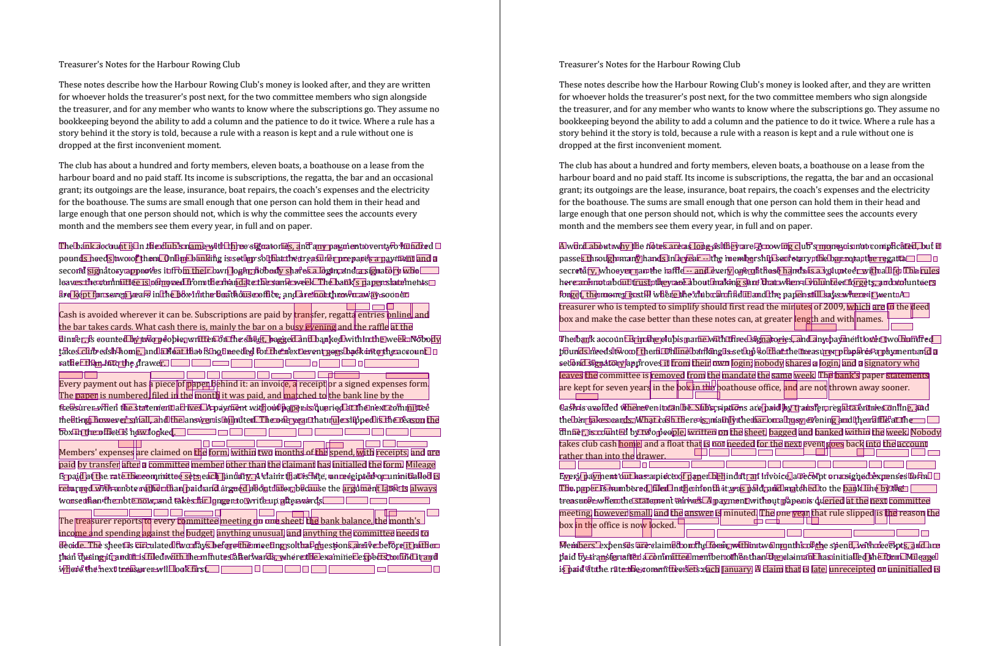
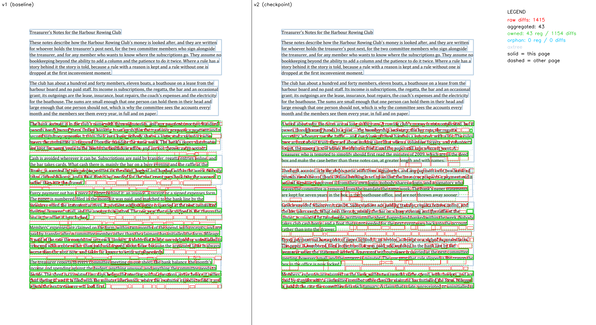
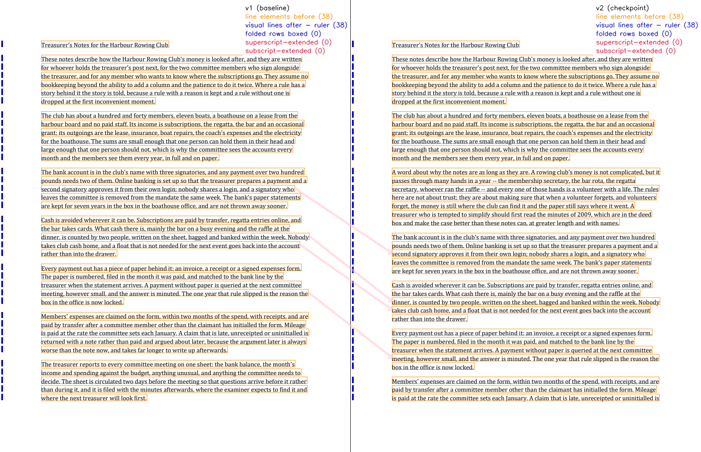
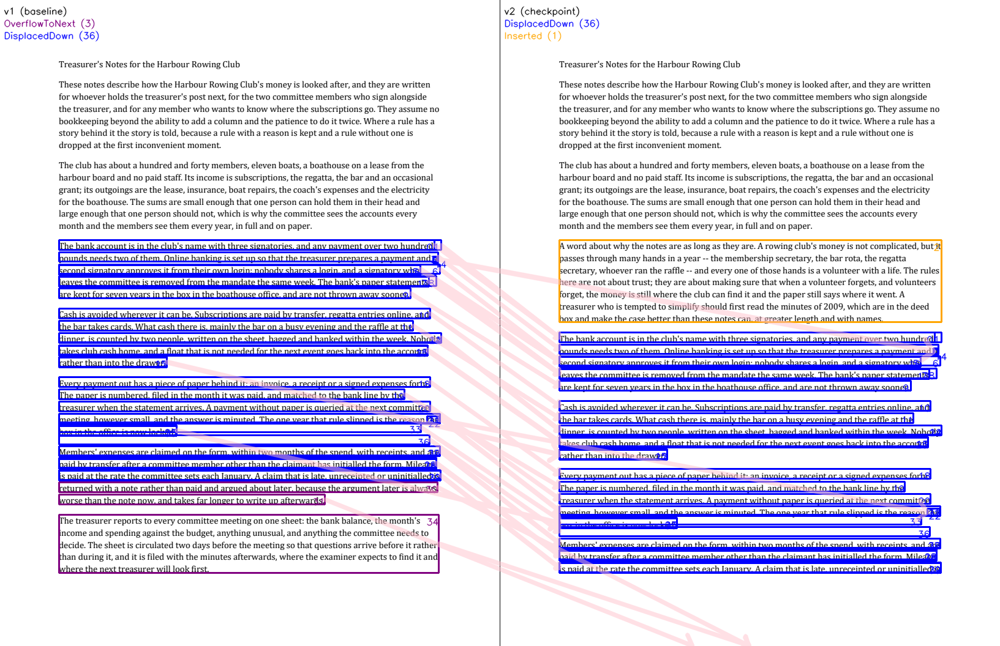
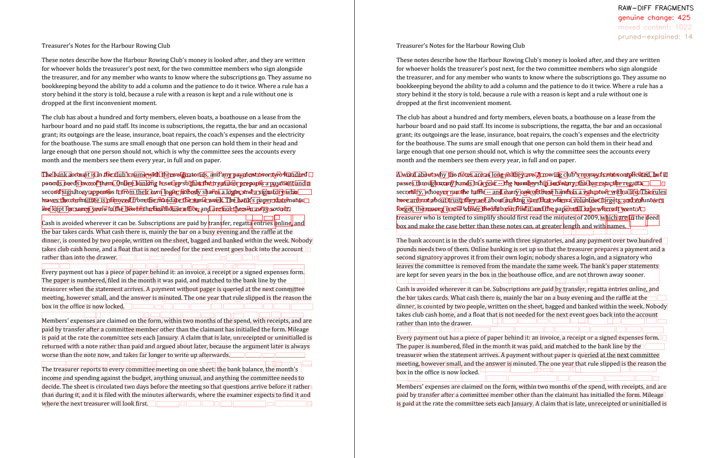
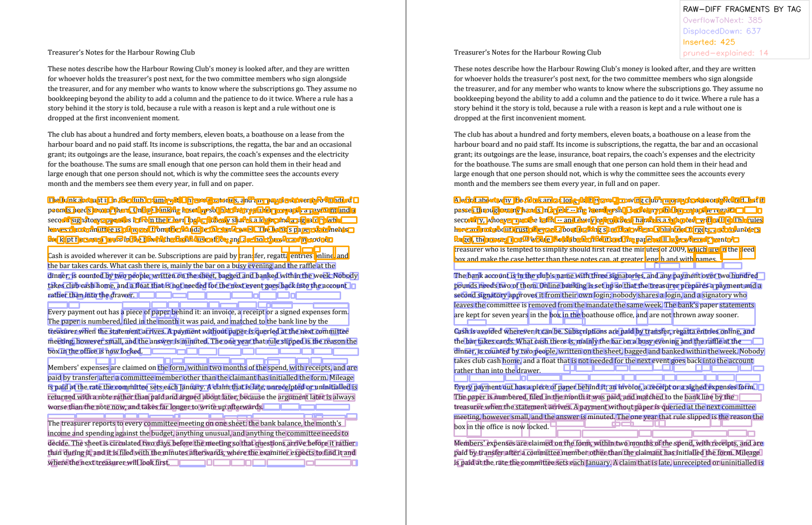
fragment-tags.png verified against fragments.json (1461 fragments; border colour checked on 764 fragment-sides (2158 not checkable: overlapped by other borders))
40 emitted · 33 pruned · raw=1415 · aggregated=43
Verified against the returned PageMatchResult: 40 returned PageDiffs, 40 table rows marked V.
Verification passed: every returned PageDiff is in the table and every non-returned row is pruned.
| ret | id | parent | block | tag | mechanism | frame | baseline rect (v1) | checkpoint rect (v2) | approved off | pruned |
|---|---|---|---|---|---|---|---|---|---|---|
| V | 1458 | 1415 | 0 | DisplacedDown | M1Line | baseline | 96,392 613×16 | 96,543 613×16 | (0, 151) | no |
| V | 1459 | 1416 | 1 | DisplacedDown | M1Line | baseline | 96,392 624×16 | 96,543 624×16 | (0, 151) | no |
| V | 1460 | 1415 | 2 | Inserted | None | checkpoint | — | 96,392 624×134 | — | no |
| V | 1461 | 1417 | 3 | DisplacedDown | M1Line | baseline | 96,412 619×15 | 96,563 619×15 | (0, 151) | no |
| V | 1462 | 1418 | 4 | DisplacedDown | M1Block | baseline | 707,419 7×9 | 707,569 7×9 | (0, 150) | no |
| V | 1463 | 1419 | 5 | DisplacedDown | M1Block | baseline | 96,432 590×15 | 96,582 590×15 | (0, 150) | no |
| V | 1464 | 1420 | 6 | DisplacedDown | M1Block | baseline | 96,432 622×15 | 96,582 622×15 | (0, 150) | no |
| V | 1465 | 1421 | 7 | DisplacedDown | M1Line | baseline | 96,451 604×16 | 96,602 604×16 | (0, 151) | no |
| V | 1466 | 1422 | 8 | DisplacedDown | M1Line | baseline | 96,451 616×16 | 96,602 616×16 | (0, 151) | no |
| V | 1467 | 1423 | 9 | DisplacedDown | M1Line | baseline | 96,471 574×16 | 96,622 574×16 | (0, 151) | no |
| V | 1468 | 1425 | 10 | DisplacedDown | M1Line | baseline | 96,504 606×16 | 96,655 606×16 | (0, 151) | no |
| V | 1469 | 1426 | 11 | DisplacedDown | M1Line | baseline | 96,524 578×16 | 96,675 578×16 | (0, 151) | no |
| V | 1470 | 1427 | 12 | DisplacedDown | M1Line | baseline | 96,544 624×15 | 96,695 624×15 | (0, 151) | no |
| V | 1471 | 1428 | 13 | DisplacedDown | M1Block | baseline | 96,564 602×15 | 96,714 602×15 | (0, 150) | no |
| V | 1472 | 1429 | 14 | DisplacedDown | M1Line | baseline | 707,420 7×9 | 707,571 7×9 | (0, 151) | no |
| V | 1473 | 1430 | 15 | DisplacedDown | M1Line | baseline | 96,583 176×16 | 96,734 176×16 | (0, 151) | no |
| V | 1474 | 1431 | 16 | DisplacedDown | M1Block | baseline | 96,433 590×16 | 96,583 590×16 | (0, 150) | no |
| V | 1475 | 1432 | 17 | DisplacedDown | M1Line | baseline | 96,452 604×16 | 96,603 604×16 | (0, 151) | no |
| V | 1476 | 1433 | 18 | DisplacedDown | M1Block | baseline | 96,616 606×16 | 96,766 606×16 | (0, 150) | no |
| V | 1477 | 1434 | 19 | DisplacedDown | M1Line | baseline | 96,636 564×16 | 96,787 564×16 | (0, 151) | no |
| V | 1478 | 1435 | 20 | DisplacedDown | M1Line | baseline | 96,656 606×16 | 96,807 606×16 | (0, 151) | no |
| V | 1479 | 1436 | 21 | DisplacedDown | M1Line | baseline | 96,676 622×15 | 96,827 622×15 | (0, 151) | no |
| V | 1480 | 1437 | 22 | DisplacedDown | M1Line | baseline | 697,680 20×12 | 697,831 20×12 | (0, 151) | no |
| V | 1481 | 1438 | 23 | DisplacedDown | M1Line | baseline | 96,695 192×16 | 96,846 192×16 | (0, 151) | no |
| V | 1482 | 1439 | 24 | DisplacedDown | M1Line | baseline | 96,544 624×16 | 96,695 624×16 | (0, 151) | no |
| V | 1483 | 1440 | 25 | DisplacedDown | M1Block | baseline | 96,565 602×16 | 96,715 602×16 | (0, 150) | no |
| V | 1484 | 1441 | 26 | DisplacedDown | M1Line | baseline | 96,729 622×15 | 96,880 622×15 | (0, 151) | no |
| V | 1485 | 1442 | 27 | DisplacedDown | M1Line | baseline | 96,584 176×16 | 96,735 176×16 | (0, 151) | no |
| V | 1486 | 1443 | 28 | DisplacedDown | M1Block | baseline | 96,748 616×16 | 96,898 616×16 | (0, 150) | no |
| V | 1487 | 1444 | 29 | DisplacedDown | M1Line | baseline | 96,768 623×16 | 96,919 623×16 | (0, 151) | no |
| V | 1488 | 1445 | 30 | OverflowToNext | None | baseline | 96,788 618×16 | — | — | no |
| V | 1489 | 1446 | 31 | OverflowToNext | None | baseline | 96,808 434×16 | — | — | no |
| V | 1490 | 1448 | 32 | DisplacedDown | M1Line | baseline | 96,676 622×16 | 96,827 622×16 | (0, 151) | no |
| V | 1491 | 1449 | 33 | DisplacedDown | M1Line | baseline | 96,690 591×16 | 96,841 591×16 | (0, 151) | no |
| V | 1492 | 1448 | 34 | OverflowToNext | Band | baseline | 96,841 620×95 | — | — | no |
| V | 1493 | 1450 | 35 | DisplacedDown | M1Line | baseline | 96,696 192×16 | 96,847 192×16 | (0, 151) | no |
| V | 1494 | 1451 | 36 | DisplacedDown | M1Block | baseline | 96,711 605×15 | 96,861 605×15 | (0, 150) | no |
| V | 1495 | 1453 | 37 | DisplacedDown | M1Block | baseline | 96,729 622×16 | 96,880 622×16 | (0, 151) | no |
| V | 1496 | 1454 | 38 | DisplacedDown | M1Block | baseline | 96,750 616×16 | 96,900 616×16 | (0, 150) | no |
| V | 1497 | 1457 | 39 | DisplacedDown | M1Block | baseline | 96,769 623×16 | 96,920 623×16 | (0, 151) | no |
| X | 1498 | 1424 | -1 | Changed | None | both | 96,491 605×13 | 96,491 605×13 | — | yes displacement-covered |
| X | 1499 | 1424 | -1 | Inserted | None | checkpoint | — | 96,504 605×3 | — | yes nested-grain |
| X | 1500 | 1445 | -1 | DisplacedDown | M3ScoredBand | baseline | 96,788 618×16 | 96,940 618×16 | (0, 152) | yes overflow-covered |
| X | 1501 | 1446 | -1 | DisplacedDown | M3ScoredBand | baseline | 96,808 434×16 | 96,960 434×16 | (0, 152) | yes overflow-covered |
| X | 1502 | 1447 | -1 | DisplacedDown | M1Line | baseline | 96,657 606×16 | 96,808 606×16 | (0, 151) | yes overflow-covered |
| X | 1503 | 1452 | -1 | OverflowToNext | Band | baseline | 96,880 619×16 | — | — | yes crossing-evicted |
| X | 1504 | 1455 | -1 | OverflowToNext | Band | baseline | 96,900 620×16 | — | — | yes crossing-evicted |
| X | 1505 | 1456 | -1 | OverflowToNext | Band | baseline | 96,920 246×16 | — | — | yes crossing-evicted |
| X | 1506 | 1445 | -1 | Changed | M3ScoredBand | both | 96,788 55×16 | 96,788 55×16 | — | yes crossing-covered |
| X | 1507 | 1445 | -1 | Changed | M3ScoredBand | both | 155,788 28×16 | 155,788 28×16 | — | yes crossing-covered |
| X | 1508 | 1445 | -1 | Changed | M3ScoredBand | both | 198,788 27×16 | 198,788 27×16 | — | yes crossing-covered |
| X | 1509 | 1445 | -1 | Changed | M3ScoredBand | both | 229,788 39×16 | 229,788 39×16 | — | yes crossing-covered |
| X | 1510 | 1445 | -1 | Changed | M3ScoredBand | both | 271,788 28×16 | 271,788 28×16 | — | yes crossing-covered |
| X | 1511 | 1445 | -1 | Changed | M3ScoredBand | both | 303,788 27×16 | 303,788 27×16 | — | yes crossing-covered |
| X | 1512 | 1445 | -1 | Changed | M3ScoredBand | both | 334,788 23×16 | 334,788 23×16 | — | yes crossing-covered |
| X | 1513 | 1445 | -1 | Changed | M3ScoredBand | both | 361,788 43×16 | 361,788 43×16 | — | yes crossing-covered |
| X | 1514 | 1445 | -1 | Changed | M3ScoredBand | both | 408,788 36×16 | 408,788 36×16 | — | yes crossing-covered |
| X | 1515 | 1445 | -1 | Changed | M3ScoredBand | both | 447,788 32×16 | 447,788 32×16 | — | yes crossing-covered |
| X | 1516 | 1445 | -1 | Changed | M3ScoredBand | both | 483,788 49×16 | 483,788 49×16 | — | yes crossing-covered |
| X | 1517 | 1445 | -1 | Changed | M3ScoredBand | both | 536,788 20×16 | 536,788 20×16 | — | yes crossing-covered |
| X | 1518 | 1445 | -1 | Changed | M3ScoredBand | both | 559,788 62×16 | 559,788 62×16 | — | yes crossing-covered |
| X | 1519 | 1445 | -1 | Changed | M3ScoredBand | both | 624,788 29×16 | 624,788 29×16 | — | yes crossing-covered |
| X | 1520 | 1445 | -1 | Changed | M3ScoredBand | both | 670,788 44×16 | 670,788 44×16 | — | yes crossing-covered |
| X | 1521 | 1445 | -1 | Changed | M3ScoredBand | both | 96,808 39×16 | 96,808 39×16 | — | yes crossing-covered |
| X | 1522 | 1445 | -1 | Changed | M3ScoredBand | both | 138,808 28×16 | 138,808 28×16 | — | yes crossing-covered |
| X | 1523 | 1445 | -1 | Changed | M3ScoredBand | both | 193,808 28×16 | 193,808 28×16 | — | yes crossing-covered |
| X | 1524 | 1445 | -1 | Changed | M3ScoredBand | both | 225,808 29×16 | 225,808 29×16 | — | yes crossing-covered |
| X | 1525 | 1445 | -1 | Changed | M3ScoredBand | both | 258,808 23×16 | 258,808 23×16 | — | yes crossing-covered |
| X | 1526 | 1445 | -1 | Changed | M3ScoredBand | both | 284,808 33×16 | 284,808 33×16 | — | yes crossing-covered |
| X | 1527 | 1445 | -1 | Changed | M3ScoredBand | both | 342,808 41×16 | 342,808 41×16 | — | yes crossing-covered |
| X | 1528 | 1445 | -1 | Changed | M3ScoredBand | both | 402,808 33×16 | 402,808 33×16 | — | yes crossing-covered |
| X | 1529 | 1445 | -1 | Changed | M3ScoredBand | both | 439,808 15×16 | 439,808 15×16 | — | yes crossing-covered |
| X | 1530 | 1445 | -1 | Changed | M3ScoredBand | both | 458,808 72×16 | 458,808 72×16 | — | yes crossing-covered |
Pair 1 v1 p1 ↔ v2 p1 DisplacedDown 57Dynamic 3OverflowFromPrev 2OverflowToNext 3
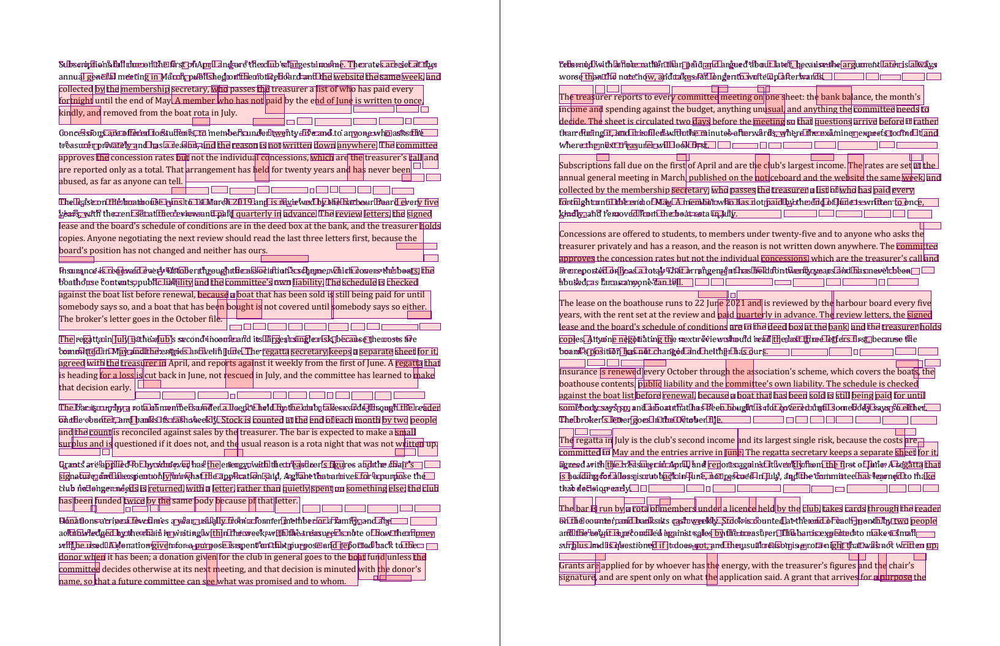
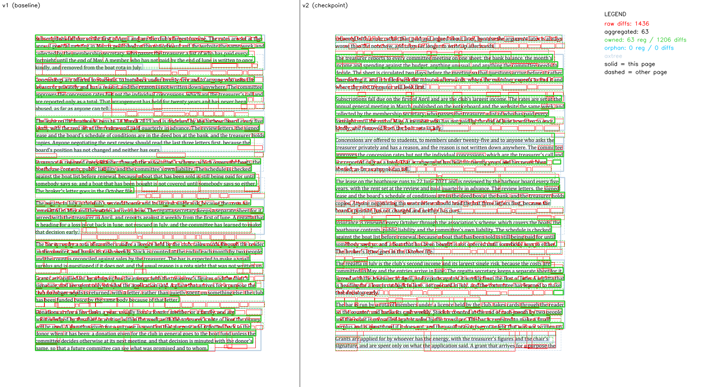
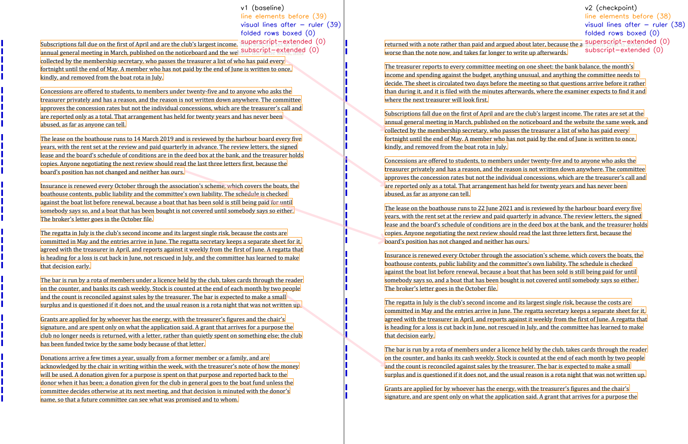
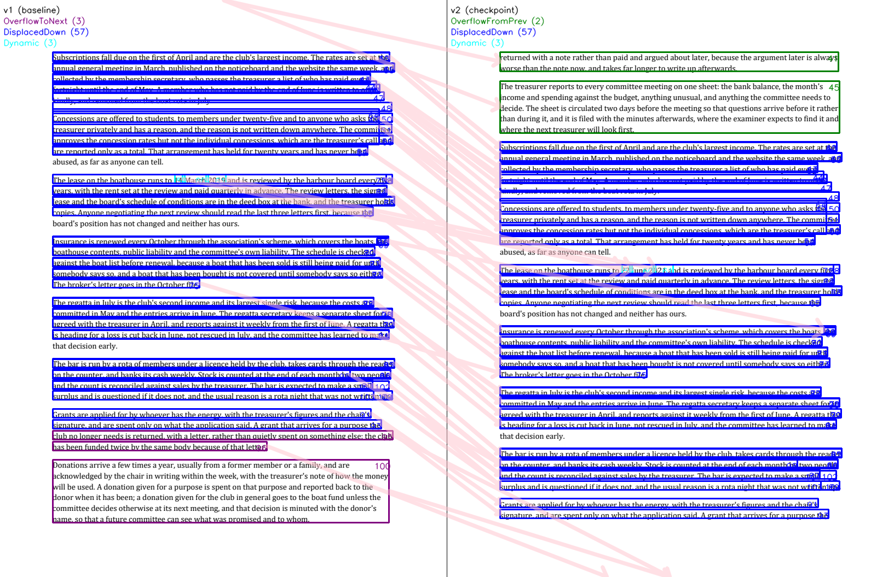
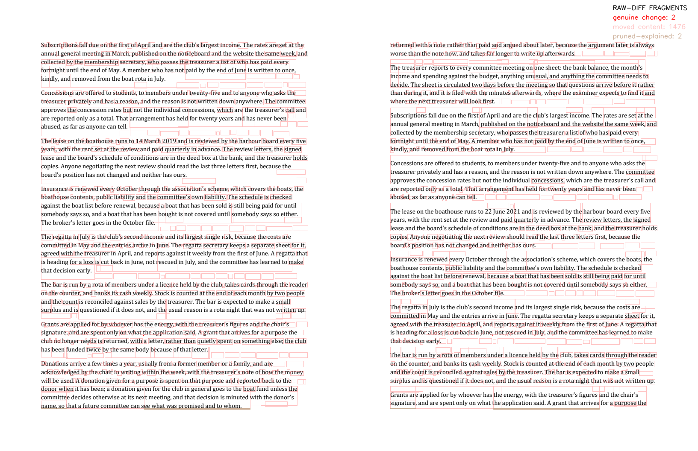
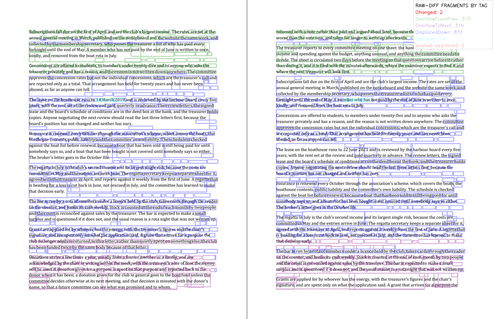
fragment-tags.png verified against fragments.json (1480 fragments; border colour checked on 850 fragment-sides (2110 not checkable: overlapped by other borders); 27 fragment-sides are hidden under the legend panel)
65 emitted · 21 pruned · raw=1436 · aggregated=63
Verified against the returned PageMatchResult: 65 returned PageDiffs, 65 table rows marked V.
Verification passed: every returned PageDiff is in the table and every non-returned row is pruned.
| ret | id | parent | block | tag | mechanism | frame | baseline rect (v1) | checkpoint rect (v2) | approved off | pruned |
|---|---|---|---|---|---|---|---|---|---|---|
| V | 1499 | 1436 | 40 | DisplacedDown | M1Block | baseline | 96,95 615×16 | 96,259 615×16 | (0, 164) | no |
| V | 1500 | 1436 | 41 | OverflowFromPrev | Band | checkpoint | — | 96,95 618×35 | — | no |
| V | 1501 | 1437 | 42 | DisplacedDown | M1Block | baseline | 96,115 624×15 | 96,279 624×15 | (0, 164) | no |
| V | 1502 | 1438 | 43 | DisplacedDown | M1Block | baseline | 96,134 580×16 | 96,298 580×16 | (0, 164) | no |
| V | 1503 | 1439 | 44 | DisplacedDown | M1Block | baseline | 96,148 591×16 | 96,313 591×16 | (0, 165) | no |
| V | 1504 | 1438 | 45 | OverflowFromPrev | Band | checkpoint | — | 96,148 620×95 | — | no |
| V | 1505 | 1440 | 46 | DisplacedDown | M1Block | baseline | 96,154 597×16 | 96,319 597×16 | (0, 165) | no |
| V | 1506 | 1441 | 47 | DisplacedDown | M1Block | baseline | 96,168 605×15 | 96,333 605×15 | (0, 165) | no |
| V | 1507 | 1442 | 48 | DisplacedDown | M1Block | baseline | 96,187 619×16 | 96,351 619×16 | (0, 164) | no |
| V | 1508 | 1443 | 49 | DisplacedDown | M1Block | baseline | 96,207 596×16 | 96,371 596×16 | (0, 164) | no |
| V | 1509 | 1444 | 50 | DisplacedDown | M1Block | baseline | 96,207 620×16 | 96,371 620×16 | (0, 164) | no |
| V | 1510 | 1445 | 51 | DisplacedDown | M1Block | baseline | 96,227 619×16 | 96,391 619×16 | (0, 164) | no |
| V | 1511 | 1446 | 52 | DisplacedDown | M1Block | baseline | 96,247 621×15 | 96,411 621×15 | (0, 164) | no |
| V | 1512 | 1447 | 53 | DisplacedDown | M1Block | baseline | 96,96 615×16 | 96,260 615×16 | (0, 164) | no |
| V | 1513 | 1448 | 54 | DisplacedDown | M1Block | baseline | 96,266 575×16 | 96,430 575×16 | (0, 164) | no |
| V | 1514 | 1449 | 55 | DisplacedDown | M1Block | baseline | 96,116 624×15 | 96,280 624×15 | (0, 164) | no |
| V | 1515 | 1450 | 56 | DisplacedDown | M1Block | baseline | 96,136 580×15 | 96,300 580×15 | (0, 164) | no |
| V | 1516 | 1451 | 57 | DisplacedDown | M1Block | baseline | 96,154 597×16 | 96,319 597×16 | (0, 165) | no |
| V | 1517 | 1452 | 58 | DisplacedDown | M3ScoredBand | baseline | 96,319 620×16 | 96,484 620×16 | (0, 165) | no |
| V | 1518 | 1452 | 59 | Dynamic | M3ScoredBand | both | 319,319 14×16 | 319,319 14×16 | (0, 165) | no |
| V | 1519 | 1452 | 60 | Dynamic | M3ScoredBand | both | 337,319 39×16 | 337,319 39×16 | (0, 165) | no |
| V | 1520 | 1452 | 61 | Dynamic | M3ScoredBand | both | 380,319 32×16 | 380,319 32×16 | (0, 165) | no |
| V | 1521 | 1453 | 62 | DisplacedDown | M1Block | baseline | 96,339 610×16 | 96,503 610×16 | (0, 164) | no |
| V | 1522 | 1454 | 63 | DisplacedDown | M1Block | baseline | 96,359 624×16 | 96,523 624×16 | (0, 164) | no |
| V | 1523 | 1455 | 64 | DisplacedDown | M1Block | baseline | 96,199 596×65 | 96,363 596×65 | (0, 164) | no |
| V | 1524 | 1456 | 65 | DisplacedDown | M1Block | baseline | 96,379 585×15 | 96,543 585×15 | (0, 164) | no |
| V | 1525 | 1457 | 66 | DisplacedDown | M1Block | baseline | 96,248 621×15 | 96,412 621×15 | (0, 164) | no |
| V | 1526 | 1458 | 67 | DisplacedDown | M1Block | baseline | 96,268 575×15 | 96,432 575×15 | (0, 164) | no |
| V | 1527 | 1459 | 68 | DisplacedDown | M1Block | baseline | 96,432 613×15 | 96,596 613×15 | (0, 164) | no |
| V | 1528 | 1460 | 69 | DisplacedDown | M1Block | baseline | 688,436 21×11 | 688,599 21×11 | (0, 163) | no |
| V | 1529 | 1461 | 70 | DisplacedDown | M1Block | baseline | 96,451 588×16 | 96,616 588×16 | (0, 165) | no |
| V | 1530 | 1462 | 71 | DisplacedDown | M1Block | baseline | 96,471 598×16 | 96,635 598×16 | (0, 164) | no |
| V | 1531 | 1463 | 72 | DisplacedDown | DynamicText | baseline | 96,319 609×16 | 96,484 609×16 | (0, 165) | no |
| V | 1532 | 1464 | 73 | DisplacedDown | M1Block | baseline | 96,491 602×16 | 96,655 602×16 | (0, 164) | no |
| V | 1533 | 1465 | 74 | DisplacedDown | M1Block | baseline | 96,340 610×16 | 96,504 610×16 | (0, 164) | no |
| V | 1534 | 1466 | 75 | DisplacedDown | M1Block | baseline | 96,511 268×15 | 96,675 268×15 | (0, 164) | no |
| V | 1535 | 1467 | 76 | DisplacedDown | M1Block | baseline | 96,360 624×16 | 96,524 624×16 | (0, 164) | no |
| V | 1536 | 1468 | 77 | DisplacedDown | M1Block | baseline | 96,544 586×15 | 96,708 586×15 | (0, 164) | no |
| V | 1537 | 1469 | 78 | DisplacedDown | M1Block | baseline | 96,564 620×15 | 96,728 620×15 | (0, 164) | no |
| V | 1538 | 1470 | 79 | DisplacedDown | M1Block | baseline | 96,583 623×16 | 96,748 623×16 | (0, 165) | no |
| V | 1539 | 1471 | 80 | DisplacedDown | M1Block | baseline | 96,433 613×15 | 96,597 613×15 | (0, 164) | no |
| V | 1540 | 1472 | 81 | DisplacedDown | M1Block | baseline | 96,603 614×16 | 96,767 614×16 | (0, 164) | no |
| V | 1541 | 1473 | 82 | DisplacedDown | M1Block | baseline | 96,451 588×16 | 96,616 588×16 | (0, 165) | no |
| V | 1542 | 1474 | 83 | DisplacedDown | M1Block | baseline | 96,472 598×16 | 96,636 598×16 | (0, 164) | no |
| V | 1543 | 1475 | 84 | DisplacedDown | M1Block | baseline | 96,492 602×16 | 96,656 602×16 | (0, 164) | no |
| V | 1544 | 1476 | 85 | DisplacedDown | M1Block | baseline | 96,656 624×16 | 96,820 624×16 | (0, 164) | no |
| V | 1545 | 1477 | 86 | DisplacedDown | M1Block | baseline | 96,676 617×15 | 96,840 617×15 | (0, 164) | no |
| V | 1546 | 1478 | 87 | DisplacedDown | M1Block | baseline | 96,695 584×16 | 96,859 584×16 | (0, 164) | no |
| V | 1547 | 1479 | 88 | DisplacedDown | M1Block | baseline | 96,545 586×16 | 96,709 586×16 | (0, 164) | no |
| V | 1548 | 1480 | 89 | DisplacedDown | M1Block | baseline | 96,715 620×16 | 96,880 620×16 | (0, 165) | no |
| V | 1549 | 1481 | 90 | DisplacedDown | M1Block | baseline | 96,565 620×15 | 96,729 620×15 | (0, 164) | no |
| V | 1550 | 1482 | 91 | DisplacedDown | M1Block | baseline | 96,748 581×16 | 96,912 581×16 | (0, 164) | no |
| V | 1551 | 1483 | 92 | DisplacedDown | M1Block | baseline | 96,583 623×16 | 96,748 623×16 | (0, 165) | no |
| V | 1552 | 1484 | 93 | DisplacedDown | M1Block | baseline | 96,768 600×16 | 96,932 600×16 | (0, 164) | no |
| V | 1553 | 1485 | 94 | DisplacedDown | M1Block | baseline | 96,604 614×16 | 96,768 614×16 | (0, 164) | no |
| V | 1554 | 1486 | 95 | OverflowToNext | None | baseline | 96,788 621×16 | — | — | no |
| V | 1555 | 1488 | 96 | OverflowToNext | None | baseline | 96,808 391×16 | — | — | no |
| V | 1556 | 1489 | 97 | DisplacedDown | M1Block | baseline | 96,657 624×16 | 96,821 624×16 | (0, 164) | no |
| V | 1557 | 1490 | 98 | DisplacedDown | M1Block | baseline | 96,677 543×16 | 96,841 543×16 | (0, 164) | no |
| V | 1558 | 1491 | 99 | DisplacedDown | M1Block | baseline | 96,677 617×16 | 96,841 617×16 | (0, 164) | no |
| V | 1559 | 1490 | 100 | OverflowToNext | Band | baseline | 96,841 614×115 | — | — | no |
| V | 1560 | 1492 | 101 | DisplacedDown | M1Block | baseline | 96,697 584×15 | 96,861 584×15 | (0, 164) | no |
| V | 1561 | 1493 | 102 | DisplacedDown | M1Block | baseline | 96,697 614×15 | 96,861 614×15 | (0, 164) | no |
| V | 1562 | 1494 | 103 | DisplacedDown | M1Block | baseline | 96,715 586×16 | 96,880 586×16 | (0, 165) | no |
| V | 1563 | 1495 | 104 | DisplacedDown | M1Block | baseline | 96,715 620×16 | 96,880 620×16 | (0, 165) | no |
| X | 1564 | 1486 | -1 | DisplacedDown | M3ScoredBand | baseline | 96,788 621×16 | 96,953 621×16 | (0, 165) | yes overflow-covered |
| X | 1565 | 1487 | -1 | Modified | None | both | 690,792 26×12 | 690,792 26×12 | — | yes overflow-covered |
| X | 1566 | 1488 | -1 | DisplacedDown | M3ScoredBand | baseline | 96,808 391×16 | 96,973 391×16 | (0, 165) | yes overflow-covered |
| X | 1567 | 1496 | -1 | OverflowToNext | Band | baseline | 96,900 600×16 | — | — | yes crossing-evicted |
| X | 1568 | 1497 | -1 | OverflowToNext | Band | baseline | 96,920 592×16 | — | — | yes crossing-evicted |
| X | 1569 | 1498 | -1 | OverflowToNext | Band | baseline | 96,940 470×16 | — | — | yes crossing-evicted |
| X | 1570 | 1486 | -1 | Changed | M3ScoredBand | both | 96,788 26×16 | 96,788 26×16 | — | yes crossing-covered |
| X | 1571 | 1486 | -1 | Changed | M3ScoredBand | both | 145,788 41×16 | 145,788 41×16 | — | yes crossing-covered |
| X | 1572 | 1486 | -1 | Changed | M3ScoredBand | both | 189,788 36×16 | 189,788 36×16 | — | yes crossing-covered |
| X | 1573 | 1486 | -1 | Changed | M3ScoredBand | both | 229,788 10×16 | 229,788 10×16 | — | yes crossing-covered |
| X | 1574 | 1486 | -1 | Changed | M3ScoredBand | both | 243,788 58×16 | 243,788 58×16 | — | yes crossing-covered |
| X | 1575 | 1486 | -1 | Changed | M3ScoredBand | both | 304,788 28×16 | 304,788 28×16 | — | yes crossing-covered |
| X | 1576 | 1486 | -1 | Changed | M3ScoredBand | both | 347,788 37×16 | 347,788 37×16 | — | yes crossing-covered |
| X | 1577 | 1486 | -1 | Changed | M3ScoredBand | both | 388,788 39×16 | 388,788 39×16 | — | yes crossing-covered |
| X | 1578 | 1486 | -1 | Changed | M3ScoredBand | both | 430,788 28×16 | 430,788 28×16 | — | yes crossing-covered |
| X | 1579 | 1486 | -1 | Changed | M3ScoredBand | both | 462,788 43×16 | 462,788 43×16 | — | yes crossing-covered |
| X | 1580 | 1486 | -1 | Changed | M3ScoredBand | both | 509,788 35×16 | 509,788 35×16 | — | yes crossing-covered |
| X | 1581 | 1486 | -1 | Changed | M3ScoredBand | both | 566,788 66×16 | 566,788 66×16 | — | yes crossing-covered |
| X | 1582 | 1486 | -1 | Changed | M3ScoredBand | both | 635,788 27×16 | 635,788 27×16 | — | yes crossing-covered |
| X | 1583 | 1486 | -1 | Changed | M3ScoredBand | both | 690,788 27×16 | 690,788 27×16 | — | yes crossing-covered |
| X | 1584 | 1486 | -1 | Changed | M3ScoredBand | both | 96,808 391×16 | 96,808 391×16 | — | yes crossing-covered |
Pair 2 v1 p2 ↔ v2 p2 DisplacedDown 50Inserted 1OverflowFromPrev 2OverflowToNext 6
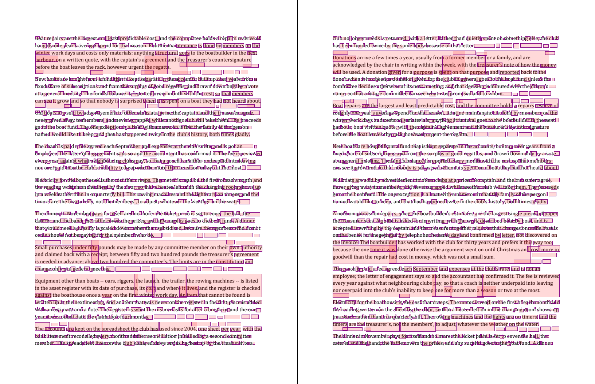
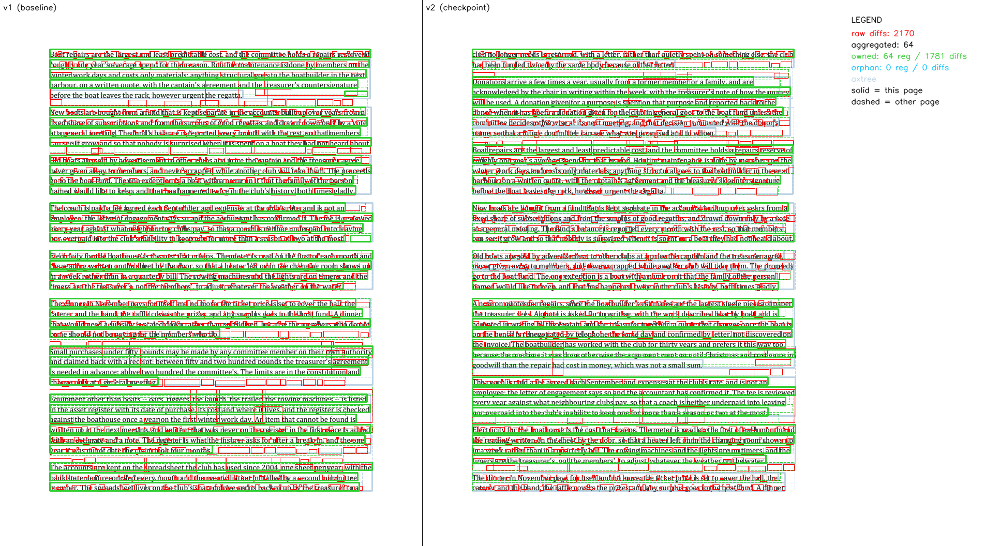
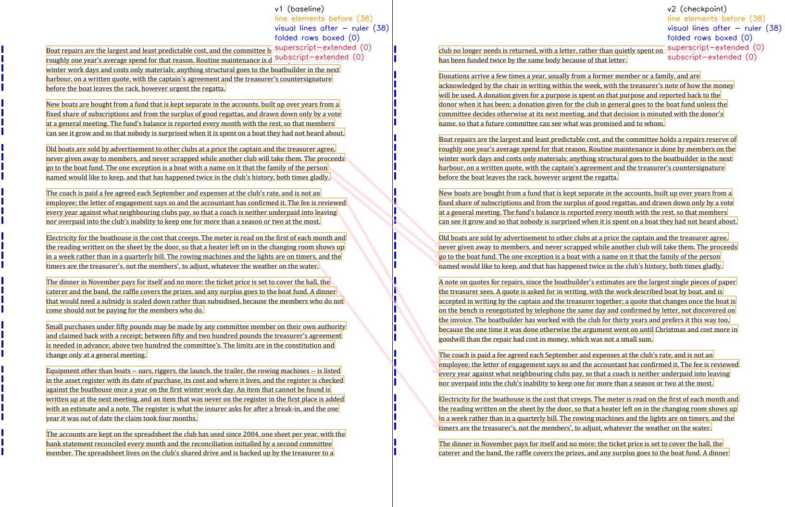
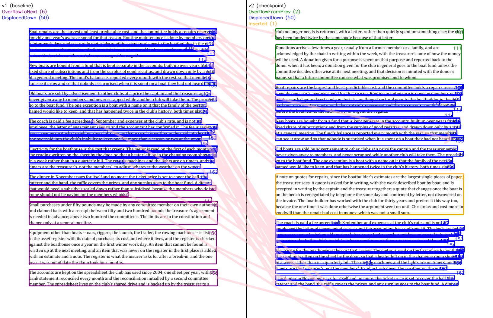
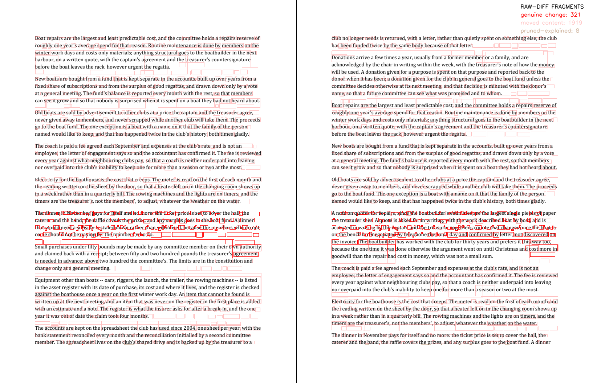
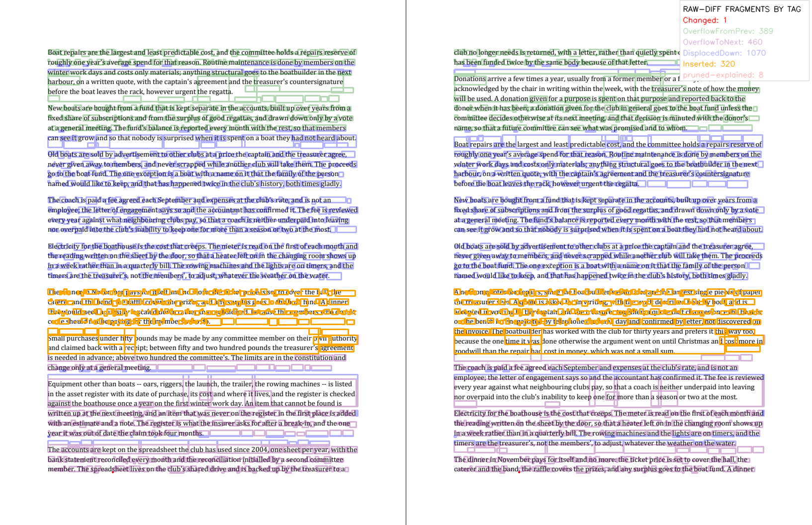
fragment-tags.png verified against fragments.json (2248 fragments; border colour checked on 1085 fragment-sides (3411 not checkable: overlapped by other borders); 37 fragment-sides are hidden under the legend panel)
59 emitted · 13 pruned · raw=2170 · aggregated=64
Verified against the returned PageMatchResult: 59 returned PageDiffs, 59 table rows marked V.
Verification passed: every returned PageDiff is in the table and every non-returned row is pruned.
| ret | id | parent | block | tag | mechanism | frame | baseline rect (v1) | checkpoint rect (v2) | approved off | pruned |
|---|---|---|---|---|---|---|---|---|---|---|
| V | 2234 | 2170 | 105 | DisplacedDown | M1Block | baseline | 96,95 619×16 | 96,279 619×16 | (0, 184) | no |
| V | 2235 | 2171 | 106 | DisplacedDown | M1Block | baseline | 96,95 621×16 | 96,279 621×16 | (0, 184) | no |
| V | 2236 | 2170 | 107 | OverflowFromPrev | Band | checkpoint | — | 96,95 621×35 | — | no |
| V | 2237 | 2172 | 108 | DisplacedDown | M1Block | baseline | 96,115 617×15 | 96,299 617×15 | (0, 184) | no |
| V | 2238 | 2173 | 109 | DisplacedDown | M1Block | baseline | 96,134 611×16 | 96,318 611×16 | (0, 184) | no |
| V | 2239 | 2174 | 110 | DisplacedDown | M1Block | baseline | 96,148 543×16 | 96,332 543×16 | (0, 184) | no |
| V | 2240 | 2173 | 111 | OverflowFromPrev | Band | checkpoint | — | 96,148 614×114 | — | no |
| V | 2241 | 2175 | 112 | DisplacedDown | M1Block | baseline | 96,154 595×16 | 96,338 595×16 | (0, 184) | no |
| V | 2242 | 2176 | 113 | DisplacedDown | M1Block | baseline | 96,168 614×15 | 96,352 614×15 | (0, 184) | no |
| V | 2243 | 2178 | 114 | DisplacedDown | M1Block | baseline | 96,187 586×16 | 96,371 586×16 | (0, 184) | no |
| V | 2244 | 2179 | 115 | DisplacedDown | M1Block | baseline | 96,207 600×16 | 96,391 600×16 | (0, 184) | no |
| V | 2245 | 2180 | 116 | DisplacedDown | M1Block | baseline | 96,207 610×16 | 96,391 610×16 | (0, 184) | no |
| V | 2246 | 2181 | 117 | DisplacedDown | M1Block | baseline | 96,227 613×16 | 96,411 613×16 | (0, 184) | no |
| V | 2247 | 2182 | 118 | DisplacedDown | M1Block | baseline | 96,247 600×15 | 96,431 600×15 | (0, 184) | no |
| V | 2248 | 2183 | 119 | DisplacedDown | M1Block | baseline | 96,266 621×16 | 96,449 621×16 | (0, 183) | no |
| V | 2249 | 2184 | 120 | DisplacedDown | M1Block | baseline | 96,96 619×15 | 96,280 619×15 | (0, 184) | no |
| V | 2250 | 2185 | 121 | DisplacedDown | M1Block | baseline | 96,300 602×15 | 96,484 602×15 | (0, 184) | no |
| V | 2251 | 2186 | 122 | DisplacedDown | M1Block | baseline | 96,116 617×15 | 96,300 617×15 | (0, 184) | no |
| V | 2252 | 2187 | 123 | DisplacedDown | M1Block | baseline | 96,319 621×16 | 96,502 621×16 | (0, 183) | no |
| V | 2253 | 2188 | 124 | DisplacedDown | M1Block | baseline | 96,339 586×16 | 96,523 586×16 | (0, 184) | no |
| V | 2254 | 2189 | 125 | DisplacedDown | M1Block | baseline | 96,155 595×16 | 96,339 595×16 | (0, 184) | no |
| V | 2255 | 2190 | 126 | DisplacedDown | M1Block | baseline | 96,359 591×16 | 96,543 591×16 | (0, 184) | no |
| V | 2256 | 2191 | 127 | DisplacedDown | M1Line | baseline | 96,392 571×16 | 96,728 571×16 | (0, 336) | no |
| V | 2257 | 2192 | 128 | DisplacedDown | M1Block | baseline | 96,208 610×16 | 96,392 610×16 | (0, 184) | no |
| V | 2258 | 2193 | 129 | DisplacedDown | M1Line | baseline | 96,412 624×15 | 96,748 624×15 | (0, 336) | no |
| V | 2259 | 2194 | 130 | DisplacedDown | M1Block | baseline | 96,432 605×15 | 96,767 605×15 | (0, 335) | no |
| V | 2260 | 2195 | 131 | DisplacedDown | M1Line | baseline | 96,451 571×16 | 96,787 571×16 | (0, 336) | no |
| V | 2261 | 2196 | 132 | DisplacedDown | M1Block | baseline | 96,268 621×16 | 96,451 621×16 | (0, 183) | no |
| V | 2262 | 2197 | 133 | DisplacedDown | M1Block | baseline | 677,272 39×12 | 677,455 39×12 | (0, 183) | no |
| V | 2263 | 2198 | 134 | DisplacedDown | M1Block | baseline | 96,484 624×16 | 96,819 624×16 | (0, 335) | no |
| V | 2264 | 2199 | 135 | DisplacedDown | M1Line | baseline | 96,504 621×16 | 96,840 621×16 | (0, 336) | no |
| V | 2265 | 2200 | 136 | DisplacedDown | M1Line | baseline | 96,524 614×16 | 96,860 614×16 | (0, 336) | no |
| V | 2266 | 2201 | 137 | DisplacedDown | M1Line | baseline | 96,544 567×15 | 96,880 567×15 | (0, 336) | no |
| V | 2267 | 2202 | 138 | DisplacedDown | M1Block | baseline | 96,360 591×15 | 96,544 591×15 | (0, 184) | no |
| V | 2268 | 2203 | 139 | DisplacedDown | M1Block | baseline | 96,577 591×16 | 96,913 591×16 | (0, 336) | no |
| V | 2269 | 2203 | 140 | Inserted | None | checkpoint | — | 96,577 622×134 | — | no |
| V | 2270 | 2206 | 141 | DisplacedDown | M1Block | baseline | 96,597 604×15 | 96,932 604×15 | (0, 335) | no |
| V | 2271 | 2207 | 142 | OverflowToNext | None | baseline | 96,616 619×16 | — | — | no |
| V | 2272 | 2209 | 143 | OverflowToNext | None | baseline | 96,636 328×16 | — | — | no |
| V | 2273 | 2211 | 144 | OverflowToNext | Band | baseline | 96,656 605×16 | — | — | no |
| V | 2274 | 2211 | 145 | OverflowToNext | Band | baseline | 96,669 624×75 | — | — | no |
| V | 2275 | 2216 | 146 | DisplacedDown | M1Line | baseline | 96,393 209×15 | 96,729 209×15 | (0, 336) | no |
| V | 2276 | 2217 | 147 | DisplacedDown | M1Line | baseline | 96,393 571×15 | 96,729 571×15 | (0, 336) | no |
| V | 2277 | 2218 | 148 | DisplacedDown | M1Line | baseline | 96,412 624×16 | 96,748 624×16 | (0, 336) | no |
| V | 2278 | 2219 | 149 | DisplacedDown | M1Line | baseline | 96,426 613×15 | 96,762 613×15 | (0, 336) | no |
| V | 2279 | 2218 | 150 | OverflowToNext | Band | baseline | 96,762 620×114 | — | — | no |
| V | 2280 | 2220 | 151 | DisplacedDown | M1Block | baseline | 96,433 605×16 | 96,768 605×16 | (0, 335) | no |
| V | 2281 | 2221 | 152 | DisplacedDown | M1Line | baseline | 96,446 619×15 | 96,782 619×15 | (0, 336) | no |
| V | 2282 | 2222 | 153 | DisplacedDown | M1Line | baseline | 96,452 571×16 | 96,788 571×16 | (0, 336) | no |
| V | 2283 | 2223 | 154 | DisplacedDown | M1Line | baseline | 96,465 592×16 | 96,801 592×16 | (0, 336) | no |
| V | 2284 | 2224 | 155 | DisplacedDown | M1Block | baseline | 96,486 620×16 | 96,821 620×16 | (0, 335) | no |
| V | 2285 | 2225 | 156 | DisplacedDown | M1Block | baseline | 96,486 624×16 | 96,821 624×16 | (0, 335) | no |
| V | 2286 | 2226 | 157 | DisplacedDown | M1Line | baseline | 96,505 609×16 | 96,841 609×16 | (0, 336) | no |
| V | 2287 | 2227 | 158 | DisplacedDown | M1Line | baseline | 96,505 621×16 | 96,841 621×16 | (0, 336) | no |
| V | 2288 | 2228 | 159 | DisplacedDown | M1Line | baseline | 96,525 314×15 | 96,861 314×15 | (0, 336) | no |
| V | 2289 | 2229 | 160 | DisplacedDown | M1Line | baseline | 96,525 614×15 | 96,861 614×15 | (0, 336) | no |
| V | 2290 | 2230 | 161 | DisplacedDown | M1Line | baseline | 96,544 567×16 | 96,880 567×16 | (0, 336) | no |
| V | 2291 | 2231 | 162 | DisplacedDown | M1Block | baseline | 96,559 623×15 | 96,894 623×15 | (0, 335) | no |
| V | 2292 | 2230 | 163 | OverflowToNext | Band | baseline | 96,894 623×55 | — | — | no |
| X | 2293 | 2177 | -1 | OverflowFromPrev | Band | checkpoint | — | 666,176 44×10 | — | yes crossing-evicted |
| X | 2294 | 2204 | -1 | Inserted | None | checkpoint | — | 96,577 619×16 | — | yes nested-grain |
| X | 2295 | 2205 | -1 | Inserted | None | checkpoint | — | 96,597 591×15 | — | yes nested-grain |
| X | 2296 | 2207 | -1 | Inserted | None | checkpoint | — | 96,616 618×16 | — | yes nested-grain |
| X | 2297 | 2208 | -1 | Modified | None | both | 96,616 619×16 | 96,616 619×16 | — | yes overflow-covered |
| X | 2298 | 2209 | -1 | Modified | None | both | 96,636 328×16 | 96,636 328×16 | — | yes overflow-covered |
| X | 2299 | 2210 | -1 | Inserted | None | checkpoint | — | 96,636 617×16 | — | yes nested-grain |
| X | 2300 | 2212 | -1 | OverflowToNext | Band | baseline | 96,669 624×16 | — | — | yes crossing-evicted |
| X | 2301 | 2213 | -1 | OverflowToNext | Band | baseline | 96,676 622×15 | — | — | yes crossing-evicted |
| X | 2302 | 2214 | -1 | OverflowToNext | Band | baseline | 96,689 615×16 | — | — | yes crossing-evicted |
| X | 2303 | 2215 | -1 | OverflowToNext | Band | baseline | 96,709 600×16 | — | — | yes crossing-evicted |
| X | 2304 | 2232 | -1 | OverflowToNext | Band | baseline | 96,914 595×15 | — | — | yes crossing-evicted |
| X | 2305 | 2233 | -1 | OverflowToNext | Band | baseline | 96,933 598×16 | — | — | yes crossing-evicted |
Pair 3 v1 p3 ↔ v2 p3 DisplacedDown 51Dynamic 1OverflowFromPrev 6OverflowToNext 5
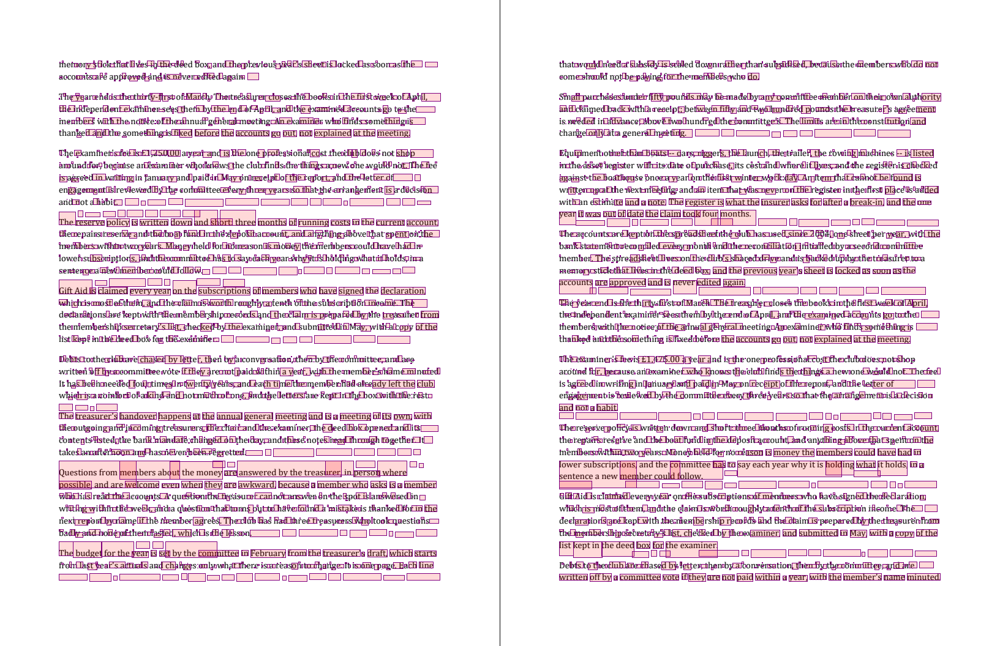
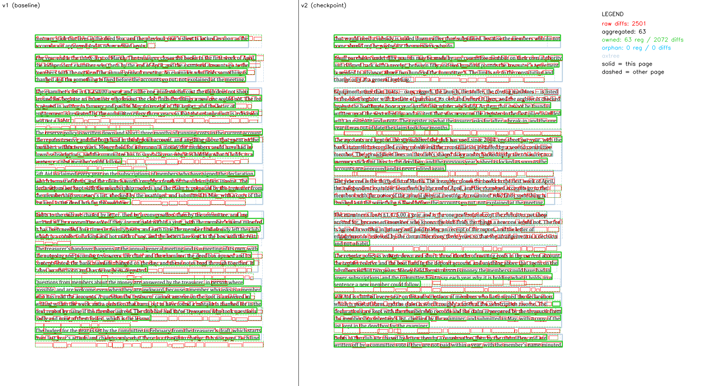
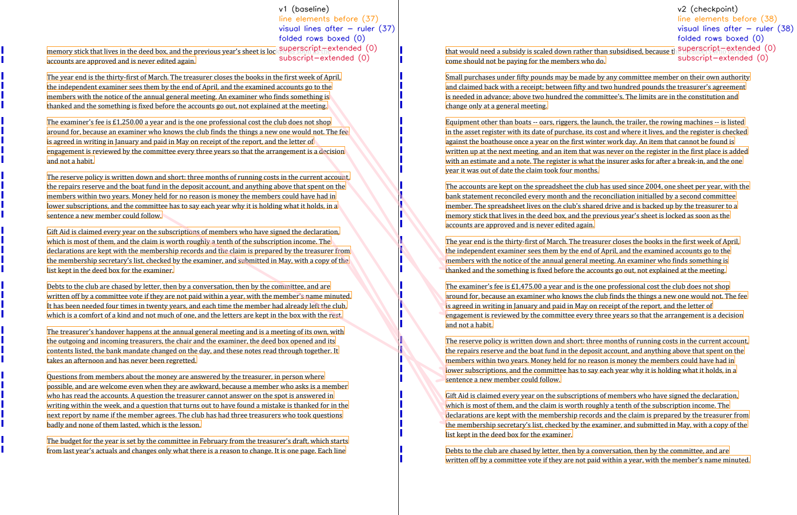
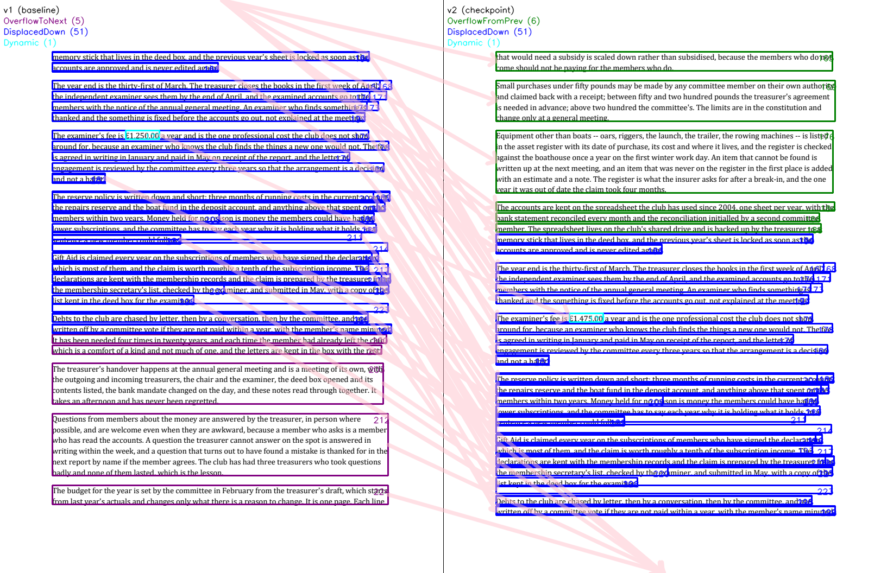
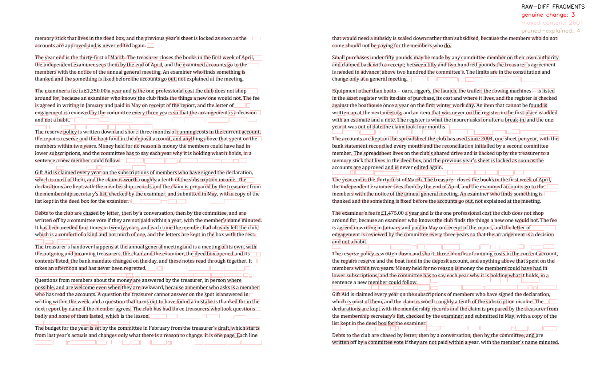
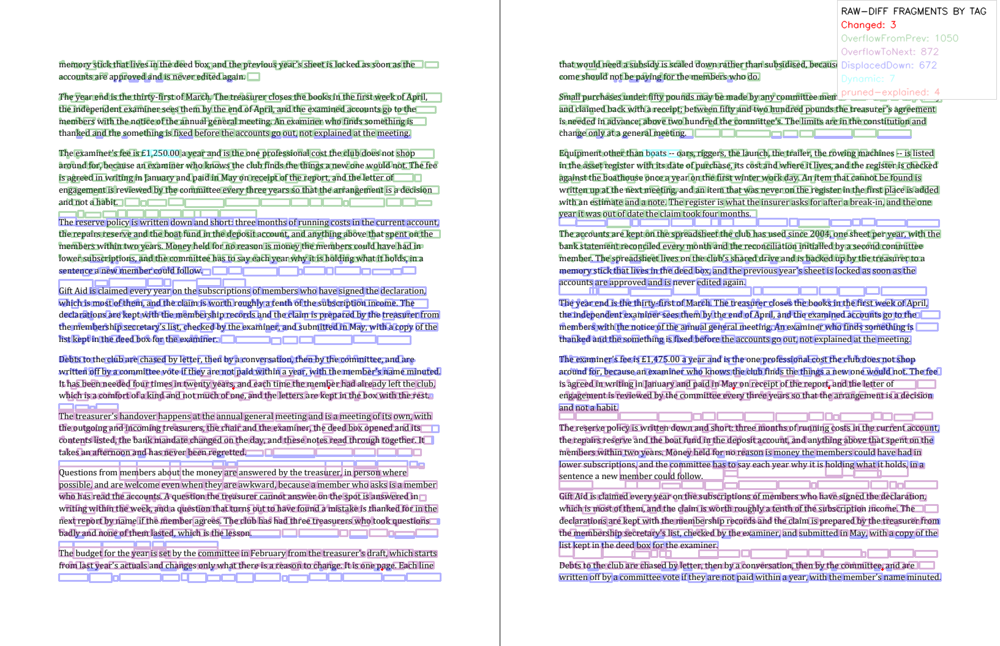
fragment-tags.png verified against fragments.json (2608 fragments; border colour checked on 1276 fragment-sides (3940 not checkable: overlapped by other borders); 27 fragment-sides are hidden under the legend panel)
63 emitted · 13 pruned · raw=2501 · aggregated=63
Verified against the returned PageMatchResult: 63 returned PageDiffs, 63 table rows marked V.
Verification passed: every returned PageDiff is in the table and every non-returned row is pruned.
| ret | id | parent | block | tag | mechanism | frame | baseline rect (v1) | checkpoint rect (v2) | approved off | pruned |
|---|---|---|---|---|---|---|---|---|---|---|
| V | 2564 | 2501 | 164 | DisplacedDown | M1Block | baseline | 96,95 583×16 | 96,431 583×16 | (0, 336) | no |
| V | 2565 | 2501 | 165 | OverflowFromPrev | Band | checkpoint | — | 96,95 619×35 | — | no |
| V | 2566 | 2503 | 166 | DisplacedDown | M1Block | baseline | 96,115 305×15 | 96,450 305×15 | (0, 335) | no |
| V | 2567 | 2505 | 167 | DisplacedDown | M1Block | baseline | 96,148 603×16 | 96,484 603×16 | (0, 336) | no |
| V | 2568 | 2506 | 168 | DisplacedDown | M1Block | baseline | 96,148 624×16 | 96,484 624×16 | (0, 336) | no |
| V | 2569 | 2505 | 169 | OverflowFromPrev | Band | checkpoint | — | 96,148 624×75 | — | no |
| V | 2570 | 2507 | 170 | DisplacedDown | M1Block | baseline | 96,168 584×15 | 96,503 584×15 | (0, 335) | no |
| V | 2571 | 2508 | 171 | DisplacedDown | M1Block | baseline | 96,168 615×15 | 96,503 615×15 | (0, 335) | no |
| V | 2572 | 2509 | 172 | DisplacedDown | M1Block | baseline | 96,187 579×16 | 96,522 579×16 | (0, 335) | no |
| V | 2573 | 2510 | 173 | DisplacedDown | M1Block | baseline | 96,187 600×16 | 96,522 600×16 | (0, 335) | no |
| V | 2574 | 2511 | 174 | DisplacedDown | M1Block | baseline | 96,207 575×16 | 96,543 575×16 | (0, 336) | no |
| V | 2575 | 2512 | 175 | DisplacedDown | M3ScoredBand | baseline | 96,240 582×16 | 96,577 582×16 | (0, 337) | no |
| V | 2576 | 2512 | 176 | OverflowFromPrev | Band | checkpoint | — | 96,240 620×115 | — | no |
| V | 2577 | 2512 | 177 | Dynamic | M3ScoredBand | both | 231,240 62×16 | 231,240 62×16 | (0, 337) | no |
| V | 2578 | 2513 | 178 | DisplacedDown | M1Line | baseline | 96,260 619×16 | 96,596 619×16 | (0, 336) | no |
| V | 2579 | 2514 | 179 | DisplacedDown | M1Line | baseline | 96,280 547×15 | 96,616 547×15 | (0, 336) | no |
| V | 2580 | 2516 | 180 | DisplacedDown | M1Block | baseline | 96,300 610×15 | 96,635 610×15 | (0, 335) | no |
| V | 2581 | 2518 | 181 | DisplacedDown | M1Block | baseline | 96,319 97×16 | 96,654 97×16 | (0, 335) | no |
| V | 2582 | 2521 | 182 | DisplacedDown | M1Block | baseline | 96,352 621×16 | 96,687 621×16 | (0, 335) | no |
| V | 2583 | 2522 | 183 | DisplacedDown | M1Line | baseline | 96,372 612×16 | 96,708 612×16 | (0, 336) | no |
| V | 2584 | 2522 | 184 | OverflowFromPrev | None | checkpoint | — | 96,372 623×16 | — | no |
| V | 2585 | 2524 | 185 | DisplacedDown | M1Line | baseline | 96,392 592×16 | 96,728 592×16 | (0, 336) | no |
| V | 2586 | 2524 | 186 | OverflowFromPrev | None | checkpoint | — | 96,392 595×16 | — | no |
| V | 2587 | 2525 | 187 | DisplacedDown | M1Line | baseline | 96,412 596×15 | 96,748 596×15 | (0, 336) | no |
| V | 2588 | 2525 | 188 | OverflowFromPrev | None | checkpoint | — | 96,412 598×15 | — | no |
| V | 2589 | 2526 | 189 | DisplacedDown | M1Block | baseline | 96,432 236×15 | 96,767 236×15 | (0, 335) | no |
| V | 2590 | 2527 | 190 | DisplacedDown | M1Line | baseline | 96,96 583×15 | 96,432 583×15 | (0, 336) | no |
| V | 2591 | 2528 | 191 | DisplacedDown | M1Block | baseline | 96,116 305×16 | 96,451 305×16 | (0, 335) | no |
| V | 2592 | 2529 | 192 | DisplacedDown | M1Block | baseline | 96,465 600×15 | 96,800 600×15 | (0, 335) | no |
| V | 2593 | 2530 | 193 | DisplacedDown | M1Block | baseline | 96,484 582×16 | 96,819 582×16 | (0, 335) | no |
| V | 2594 | 2531 | 194 | DisplacedDown | M1Block | baseline | 96,504 622×16 | 96,840 622×16 | (0, 336) | no |
| V | 2595 | 2532 | 195 | DisplacedDown | M1Block | baseline | 96,524 619×16 | 96,860 619×16 | (0, 336) | no |
| V | 2596 | 2533 | 196 | DisplacedDown | M1Block | baseline | 96,544 260×15 | 96,880 260×15 | (0, 336) | no |
| V | 2597 | 2534 | 197 | DisplacedDown | M1Block | baseline | 96,208 575×15 | 96,544 575×15 | (0, 336) | no |
| V | 2598 | 2535 | 198 | DisplacedDown | M1Line | baseline | 96,577 581×16 | 96,913 581×16 | (0, 336) | no |
| V | 2599 | 2536 | 199 | DisplacedDown | M1Block | baseline | 96,597 624×15 | 96,932 624×15 | (0, 335) | no |
| V | 2600 | 2537 | 200 | OverflowToNext | None | baseline | 96,616 615×16 | — | — | no |
| V | 2601 | 2538 | 201 | OverflowToNext | None | baseline | 96,636 606×16 | — | — | no |
| V | 2602 | 2539 | 202 | DisplacedDown | M1Block | baseline | 96,321 97×16 | 96,656 97×16 | (0, 335) | no |
| V | 2603 | 2539 | 203 | OverflowToNext | Band | baseline | 96,669 609×75 | — | — | no |
| V | 2604 | 2541 | 204 | DisplacedDown | M1Block | baseline | 96,354 591×16 | 96,689 591×16 | (0, 335) | no |
| V | 2605 | 2542 | 205 | DisplacedDown | M1Block | baseline | 96,354 621×16 | 96,689 621×16 | (0, 335) | no |
| V | 2606 | 2543 | 206 | DisplacedDown | M1Line | baseline | 96,373 598×16 | 96,709 598×16 | (0, 336) | no |
| V | 2607 | 2544 | 207 | DisplacedDown | M1Line | baseline | 96,373 612×16 | 96,709 612×16 | (0, 336) | no |
| V | 2608 | 2545 | 208 | DisplacedDown | M1Line | baseline | 96,393 307×15 | 96,729 307×15 | (0, 336) | no |
| V | 2609 | 2546 | 209 | DisplacedDown | M1Line | baseline | 96,393 592×15 | 96,729 592×15 | (0, 336) | no |
| V | 2610 | 2547 | 210 | DisplacedDown | M1Line | baseline | 96,412 596×16 | 96,748 596×16 | (0, 336) | no |
| V | 2611 | 2548 | 211 | DisplacedDown | M1Line | baseline | 96,426 569×15 | 96,762 569×15 | (0, 336) | no |
| V | 2612 | 2547 | 212 | OverflowToNext | Band | baseline | 96,762 618×114 | — | — | no |
| V | 2613 | 2549 | 213 | DisplacedDown | M1Block | baseline | 96,433 236×16 | 96,768 236×16 | (0, 335) | no |
| V | 2614 | 2550 | 214 | DisplacedDown | M1Block | baseline | 96,447 617×15 | 96,782 617×15 | (0, 335) | no |
| V | 2615 | 2551 | 215 | DisplacedDown | M1Block | baseline | 96,466 588×16 | 96,801 588×16 | (0, 335) | no |
| V | 2616 | 2552 | 216 | DisplacedDown | M1Block | baseline | 96,466 600×16 | 96,801 600×16 | (0, 335) | no |
| V | 2617 | 2553 | 217 | DisplacedDown | M1Block | baseline | 96,486 618×16 | 96,821 618×16 | (0, 335) | no |
| V | 2618 | 2555 | 218 | DisplacedDown | M1Block | baseline | 96,505 606×16 | 96,841 606×16 | (0, 336) | no |
| V | 2619 | 2556 | 219 | DisplacedDown | M1Block | baseline | 96,505 622×16 | 96,841 622×16 | (0, 336) | no |
| V | 2620 | 2557 | 220 | DisplacedDown | M1Block | baseline | 96,525 316×15 | 96,861 316×15 | (0, 336) | no |
| V | 2621 | 2558 | 221 | DisplacedDown | M1Block | baseline | 96,525 619×15 | 96,861 619×15 | (0, 336) | no |
| V | 2622 | 2559 | 222 | DisplacedDown | M1Block | baseline | 96,544 260×16 | 96,880 260×16 | (0, 336) | no |
| V | 2623 | 2560 | 223 | DisplacedDown | M1Block | baseline | 96,559 618×15 | 96,894 618×15 | (0, 335) | no |
| V | 2624 | 2559 | 224 | OverflowToNext | Band | baseline | 96,894 618×35 | — | — | no |
| V | 2625 | 2561 | 225 | DisplacedDown | M1Block | baseline | 96,578 581×15 | 96,914 581×15 | (0, 336) | no |
| V | 2626 | 2563 | 226 | DisplacedDown | M1Block | baseline | 96,598 624×16 | 96,933 624×16 | (0, 335) | no |
| X | 2627 | 2502 | -1 | OverflowFromPrev | Band | checkpoint | — | 96,95 619×16 | — | yes crossing-evicted |
| X | 2628 | 2504 | -1 | OverflowFromPrev | Band | checkpoint | — | 96,115 328×15 | — | yes crossing-evicted |
| X | 2629 | 2515 | -1 | OverflowFromPrev | Band | checkpoint | — | 96,280 592×15 | — | yes crossing-evicted |
| X | 2630 | 2517 | -1 | OverflowFromPrev | Band | checkpoint | — | 96,300 620×15 | — | yes crossing-evicted |
| X | 2631 | 2519 | -1 | OverflowFromPrev | Band | checkpoint | — | 96,319 609×16 | — | yes crossing-evicted |
| X | 2632 | 2520 | -1 | OverflowFromPrev | Band | checkpoint | — | 96,339 314×13 | — | yes crossing-evicted |
| X | 2633 | 2520 | -1 | OverflowFromPrev | Band | checkpoint | — | 96,352 314×3 | — | yes crossing-evicted |
| X | 2634 | 2523 | -1 | Modified | None | both | 96,372 623×16 | 96,372 623×16 | — | yes arrival-covered |
| X | 2635 | 2537 | -1 | Modified | None | both | 96,616 615×16 | 96,616 615×16 | — | yes overflow-covered |
| X | 2636 | 2538 | -1 | Modified | None | both | 96,636 606×16 | 96,636 606×16 | — | yes overflow-covered |
| X | 2637 | 2540 | -1 | OverflowToNext | Band | baseline | 96,669 609×16 | — | — | yes crossing-evicted |
| X | 2638 | 2554 | -1 | OverflowToNext | Band | baseline | 693,825 21×12 | — | — | yes crossing-evicted |
| X | 2639 | 2562 | -1 | OverflowToNext | Band | baseline | 96,914 612×15 | — | — | yes crossing-evicted |
Pair 4 v1 p4 ↔ v2 p4 Deleted 1DisplacedDown 48OverflowFromPrev 5OverflowToNext 2
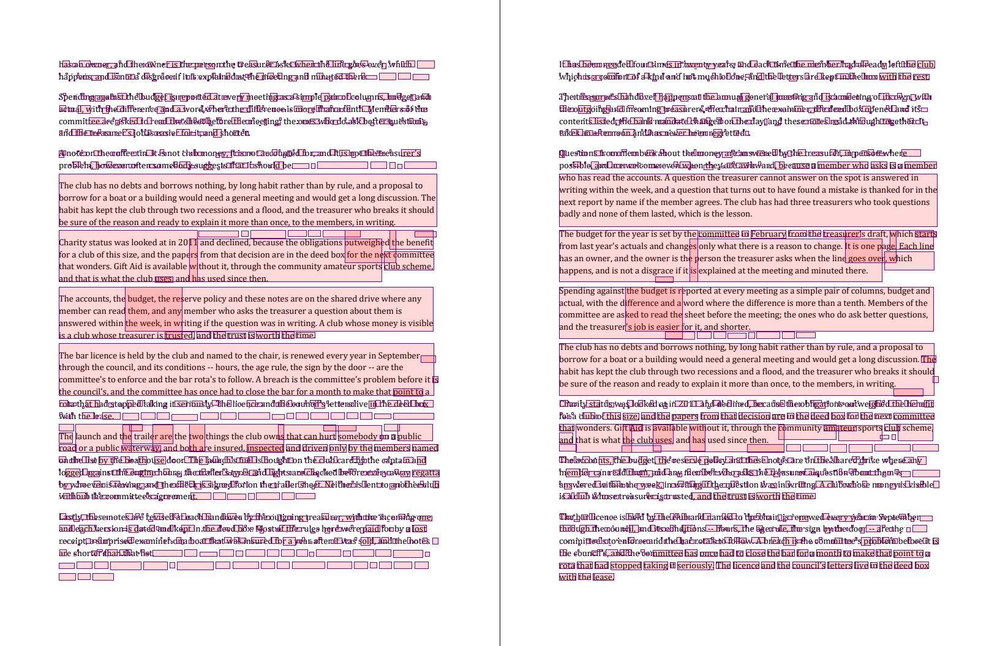
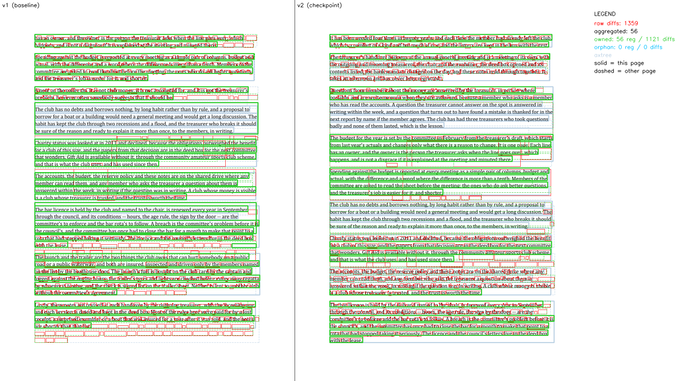
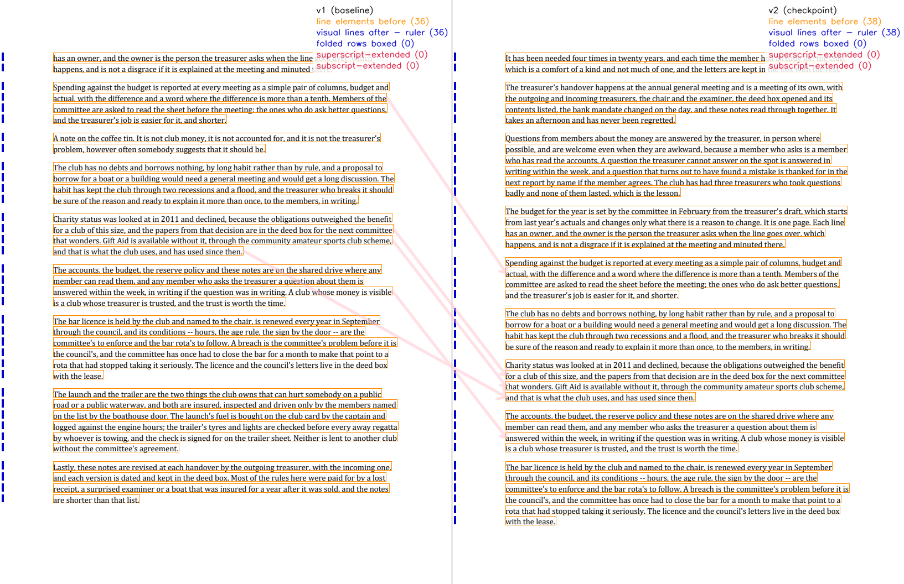
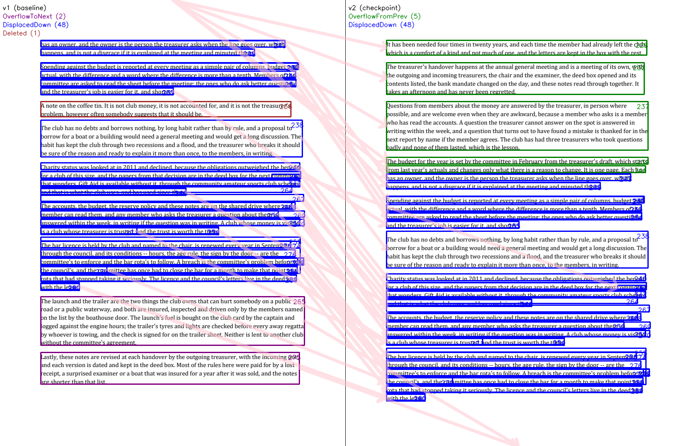
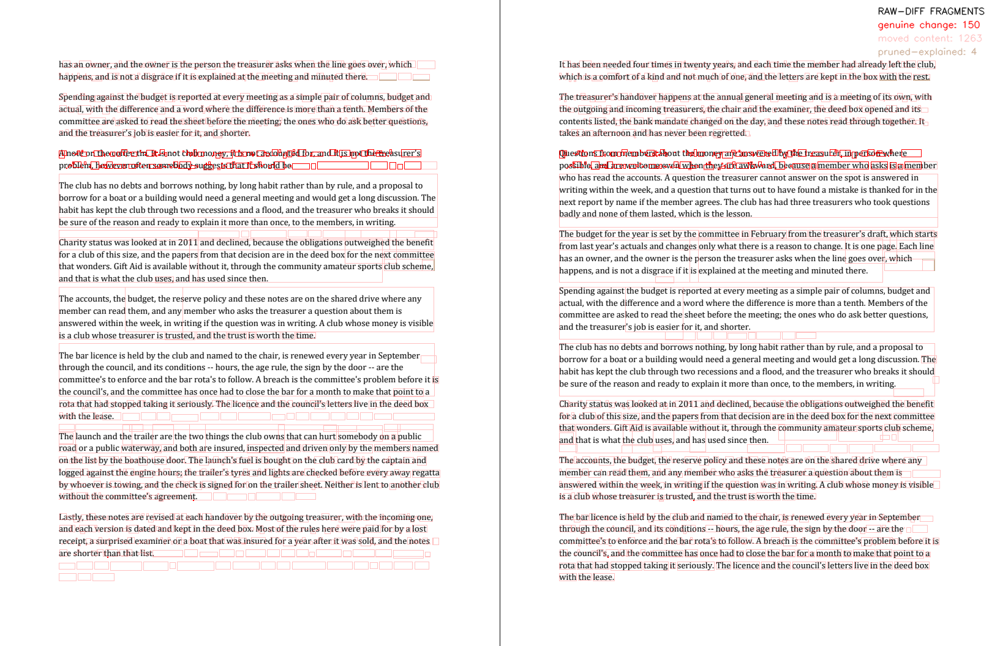
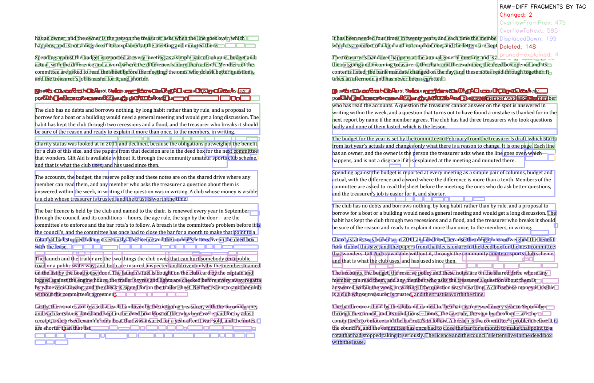
fragment-tags.png verified against fragments.json (1417 fragments; border colour checked on 741 fragment-sides (2093 not checkable: overlapped by other borders); 40 fragment-sides are hidden under the legend panel)
56 emitted · 8 pruned · raw=1359 · aggregated=56
Verified against the returned PageMatchResult: 56 returned PageDiffs, 56 table rows marked V.
Verification passed: every returned PageDiff is in the table and every non-returned row is pruned.
| ret | id | parent | block | tag | mechanism | frame | baseline rect (v1) | checkpoint rect (v2) | approved off | pruned |
|---|---|---|---|---|---|---|---|---|---|---|
| V | 1415 | 1359 | 227 | DisplacedDown | M1Block | baseline | 96,95 577×16 | 96,411 577×16 | (0, 316) | no |
| V | 1416 | 1359 | 228 | OverflowFromPrev | Band | checkpoint | — | 96,95 615×35 | — | no |
| V | 1417 | 1361 | 229 | DisplacedDown | M1Block | baseline | 96,115 505×15 | 96,431 505×15 | (0, 316) | no |
| V | 1418 | 1363 | 230 | DisplacedDown | M1Line | baseline | 96,148 607×16 | 96,464 607×16 | (0, 316) | no |
| V | 1419 | 1364 | 231 | DisplacedDown | M1Line | baseline | 96,148 609×16 | 96,464 609×16 | (0, 316) | no |
| V | 1420 | 1363 | 232 | OverflowFromPrev | Band | checkpoint | — | 96,148 609×75 | — | no |
| V | 1421 | 1365 | 233 | DisplacedDown | M1Line | baseline | 96,168 602×15 | 96,484 602×15 | (0, 316) | no |
| V | 1422 | 1366 | 234 | DisplacedDown | M1Block | baseline | 96,187 603×16 | 96,502 603×16 | (0, 315) | no |
| V | 1423 | 1367 | 235 | DisplacedDown | M1Line | baseline | 96,207 313×16 | 96,523 313×16 | (0, 316) | no |
| V | 1424 | 1368 | 236 | Deleted | None | baseline | 96,240 591×36 | — | — | no |
| V | 1425 | 1368 | 237 | OverflowFromPrev | Band | checkpoint | — | 96,240 618×115 | — | no |
| V | 1426 | 1372 | 238 | DisplacedDown | M1Block | baseline | 96,284 618×87 | 96,547 618×87 | (0, 263) | no |
| V | 1427 | 1373 | 239 | OverflowFromPrev | None | checkpoint | — | 96,372 618×16 | — | no |
| V | 1428 | 1374 | 240 | DisplacedDown | M1Block | baseline | 96,385 612×16 | 96,648 612×16 | (0, 263) | no |
| V | 1429 | 1374 | 241 | OverflowFromPrev | None | checkpoint | — | 96,392 612×16 | — | no |
| V | 1430 | 1376 | 242 | DisplacedDown | M1Block | baseline | 96,405 614×16 | 96,668 614×16 | (0, 263) | no |
| V | 1431 | 1377 | 243 | DisplacedDown | M1Block | baseline | 96,96 577×15 | 96,412 577×15 | (0, 316) | no |
| V | 1432 | 1378 | 244 | DisplacedDown | M1Block | baseline | 96,425 612×16 | 96,688 612×16 | (0, 263) | no |
| V | 1433 | 1379 | 245 | DisplacedDown | M1Block | baseline | 96,116 505×15 | 96,432 505×15 | (0, 316) | no |
| V | 1434 | 1380 | 246 | DisplacedDown | M1Block | baseline | 96,445 343×16 | 96,708 343×16 | (0, 263) | no |
| V | 1435 | 1381 | 247 | DisplacedDown | M1Line | baseline | 96,149 607×15 | 96,465 607×15 | (0, 316) | no |
| V | 1436 | 1382 | 248 | DisplacedDown | M1Block | baseline | 96,478 593×16 | 96,741 593×16 | (0, 263) | no |
| V | 1437 | 1383 | 249 | DisplacedDown | M1Line | baseline | 96,168 602×16 | 96,484 602×16 | (0, 316) | no |
| V | 1438 | 1384 | 250 | DisplacedDown | M1Block | baseline | 96,498 561×16 | 96,761 561×16 | (0, 263) | no |
| V | 1439 | 1385 | 251 | DisplacedDown | M1Block | baseline | 96,189 603×16 | 96,504 603×16 | (0, 315) | no |
| V | 1440 | 1386 | 252 | DisplacedDown | M1Block | baseline | 96,517 612×16 | 96,780 612×16 | (0, 263) | no |
| V | 1441 | 1387 | 253 | DisplacedDown | M1Line | baseline | 96,208 313×16 | 96,524 313×16 | (0, 316) | no |
| V | 1442 | 1388 | 254 | DisplacedDown | M1Block | baseline | 96,537 420×16 | 96,799 420×16 | (0, 262) | no |
| V | 1443 | 1389 | 255 | DisplacedDown | M1Block | baseline | 96,561 613×86 | 96,824 613×86 | (0, 263) | no |
| V | 1444 | 1390 | 256 | DisplacedDown | M1Block | baseline | 96,570 590×16 | 96,833 590×16 | (0, 263) | no |
| V | 1445 | 1391 | 257 | DisplacedDown | M1Block | baseline | 96,610 621×16 | 96,873 621×16 | (0, 263) | no |
| V | 1446 | 1392 | 258 | DisplacedDown | M1Block | baseline | 96,630 606×15 | 96,893 606×15 | (0, 263) | no |
| V | 1447 | 1393 | 259 | DisplacedDown | M1Block | baseline | 96,650 604×15 | 96,913 604×15 | (0, 263) | no |
| V | 1448 | 1394 | 260 | DisplacedDown | M1Block | baseline | 96,669 91×16 | 96,931 91×16 | (0, 262) | no |
| V | 1449 | 1395 | 261 | DisplacedDown | M1Block | baseline | 96,406 614×16 | 96,669 614×16 | (0, 263) | no |
| V | 1450 | 1396 | 262 | DisplacedDown | M1Block | baseline | 642,412 67×11 | 642,675 67×11 | (0, 263) | no |
| V | 1451 | 1397 | 263 | DisplacedDown | M1Block | baseline | 96,426 612×16 | 96,689 612×16 | (0, 263) | no |
| V | 1452 | 1398 | 264 | DisplacedDown | M1Block | baseline | 96,439 593×16 | 96,702 593×16 | (0, 263) | no |
| V | 1453 | 1397 | 265 | OverflowToNext | Band | baseline | 96,702 623×115 | — | — | no |
| V | 1454 | 1399 | 266 | DisplacedDown | M1Block | baseline | 96,446 343×16 | 96,709 343×16 | (0, 263) | no |
| V | 1455 | 1400 | 267 | DisplacedDown | M1Block | baseline | 96,460 621×16 | 96,722 621×16 | (0, 262) | no |
| V | 1456 | 1401 | 268 | DisplacedDown | M1Block | baseline | 96,479 601×16 | 96,742 601×16 | (0, 263) | no |
| V | 1457 | 1402 | 269 | DisplacedDown | M1Block | baseline | 96,499 623×15 | 96,762 623×15 | (0, 263) | no |
| V | 1458 | 1403 | 270 | DisplacedDown | M1Block | baseline | 96,519 622×15 | 96,782 622×15 | (0, 263) | no |
| V | 1459 | 1404 | 271 | DisplacedDown | M1Block | baseline | 96,539 227×16 | 96,801 227×16 | (0, 262) | no |
| V | 1460 | 1405 | 272 | DisplacedDown | M1Block | baseline | 96,539 420×16 | 96,801 420×16 | (0, 262) | no |
| V | 1461 | 1406 | 273 | DisplacedDown | M1Block | baseline | 96,571 590×16 | 96,834 590×16 | (0, 263) | no |
| V | 1462 | 1407 | 274 | DisplacedDown | M1Block | baseline | 96,571 611×16 | 96,834 611×16 | (0, 263) | no |
| V | 1463 | 1406 | 275 | OverflowToNext | Band | baseline | 96,834 611×75 | — | — | no |
| V | 1464 | 1408 | 276 | DisplacedDown | M1Block | baseline | 96,591 601×16 | 96,854 601×16 | (0, 263) | no |
| V | 1465 | 1409 | 277 | DisplacedDown | M1Block | baseline | 96,611 607×16 | 96,874 607×16 | (0, 263) | no |
| V | 1466 | 1410 | 278 | DisplacedDown | M1Block | baseline | 96,611 621×16 | 96,874 621×16 | (0, 263) | no |
| V | 1467 | 1411 | 279 | DisplacedDown | M1Block | baseline | 96,631 156×15 | 96,894 156×15 | (0, 263) | no |
| V | 1468 | 1412 | 280 | DisplacedDown | M1Block | baseline | 96,631 606×15 | 96,894 606×15 | (0, 263) | no |
| V | 1469 | 1413 | 281 | DisplacedDown | M1Block | baseline | 96,651 604×15 | 96,914 604×15 | (0, 263) | no |
| V | 1470 | 1414 | 282 | DisplacedDown | M1Block | baseline | 96,671 91×16 | 96,933 91×16 | (0, 262) | no |
| X | 1471 | 1360 | -1 | OverflowFromPrev | Band | checkpoint | — | 96,95 615×16 | — | yes crossing-evicted |
| X | 1472 | 1362 | -1 | OverflowFromPrev | Band | checkpoint | — | 96,115 606×15 | — | yes crossing-evicted |
| X | 1473 | 1368 | -1 | OverflowFromPrev | Band | checkpoint | — | 96,240 569×16 | — | yes crossing-evicted |
| X | 1474 | 1369 | -1 | OverflowFromPrev | Band | checkpoint | — | 96,240 591×16 | — | yes crossing-evicted |
| X | 1475 | 1370 | -1 | OverflowFromPrev | Band | checkpoint | — | 96,260 383×16 | — | yes crossing-evicted |
| X | 1476 | 1371 | -1 | OverflowFromPrev | Band | checkpoint | — | 96,260 617×16 | — | yes crossing-evicted |
| X | 1477 | 1373 | -1 | Modified | None | both | 96,372 618×16 | 96,372 618×16 | — | yes arrival-covered |
| X | 1478 | 1375 | -1 | Modified | None | both | 96,392 612×16 | 96,392 612×16 | — | yes arrival-covered |
7 · Diagnostics
Pair 0 evidence
Pruned records (33)
| id | tag | reason | rect |
|---|---|---|---|
| 1498 | Changed | displacement-covered | 96,491 605×13 |
| 1499 | Inserted | nested-grain | 96,504 605×3 |
| 1500 | DisplacedDown | overflow-covered | 96,788 618×16 |
| 1501 | DisplacedDown | overflow-covered | 96,808 434×16 |
| 1502 | DisplacedDown | overflow-covered | 96,808 606×16 |
| 1503 | OverflowToNext | crossing-evicted | 96,880 619×16 |
| 1504 | OverflowToNext | crossing-evicted | 96,900 620×16 |
| 1505 | OverflowToNext | crossing-evicted | 96,920 246×16 |
| 1506 | Changed | crossing-covered | 96,788 55×16 |
| 1507 | Changed | crossing-covered | 155,788 28×16 |
| 1508 | Changed | crossing-covered | 198,788 27×16 |
| 1509 | Changed | crossing-covered | 229,788 39×16 |
| 1510 | Changed | crossing-covered | 271,788 28×16 |
| 1511 | Changed | crossing-covered | 303,788 27×16 |
| 1512 | Changed | crossing-covered | 334,788 23×16 |
| 1513 | Changed | crossing-covered | 361,788 43×16 |
| 1514 | Changed | crossing-covered | 408,788 36×16 |
| 1515 | Changed | crossing-covered | 447,788 32×16 |
| 1516 | Changed | crossing-covered | 483,788 49×16 |
| 1517 | Changed | crossing-covered | 536,788 20×16 |
| 1518 | Changed | crossing-covered | 559,788 62×16 |
| 1519 | Changed | crossing-covered | 624,788 29×16 |
| 1520 | Changed | crossing-covered | 670,788 44×16 |
| 1521 | Changed | crossing-covered | 96,808 39×16 |
| 1522 | Changed | crossing-covered | 138,808 28×16 |
| 1523 | Changed | crossing-covered | 193,808 28×16 |
| 1524 | Changed | crossing-covered | 225,808 29×16 |
| 1525 | Changed | crossing-covered | 258,808 23×16 |
| 1526 | Changed | crossing-covered | 284,808 33×16 |
| 1527 | Changed | crossing-covered | 342,808 41×16 |
| 1528 | Changed | crossing-covered | 402,808 33×16 |
| 1529 | Changed | crossing-covered | 439,808 15×16 |
| 1530 | Changed | crossing-covered | 458,808 72×16 |
Offset search
| rec | tag | candidates | rejected | approved |
|---|---|---|---|---|
| 1458 | DisplacedDown | (0, 150), (0, 151) | (0, 150):pixel-reject | (0, 151) |
| 1459 | DisplacedDown | (0, 150), (0, 151) | (0, 150):pixel-reject | (0, 151) |
| 1461 | DisplacedDown | (0, 150), (0, 151) | (0, 150):pixel-reject | (0, 151) |
| 1462 | DisplacedDown | (0, 150) | — | (0, 150) |
| 1463 | DisplacedDown | (0, 149), (0, 150) | (0, 149):pixel-reject | (0, 150) |
| 1464 | DisplacedDown | (0, 149), (0, 150) | (0, 149):pixel-reject | (0, 150) |
| 1465 | DisplacedDown | (0, 150), (0, 151) | (0, 150):pixel-reject | (0, 151) |
| 1466 | DisplacedDown | (0, 150), (0, 151) | (0, 150):pixel-reject | (0, 151) |
| 1467 | DisplacedDown | (0, 150), (0, 151) | (0, 150):pixel-reject | (0, 151) |
| 1468 | DisplacedDown | (0, 150), (0, 151) | (0, 150):pixel-reject | (0, 151) |
| 1469 | DisplacedDown | (0, 150), (0, 151) | (0, 150):pixel-reject | (0, 151) |
| 1470 | DisplacedDown | (0, 149), (0, 150), (0, 151) | (0, 149):pixel-reject, (0, 150):pixel-reject | (0, 151) |
| 1471 | DisplacedDown | (0, 149), (0, 150) | (0, 149):pixel-reject | (0, 150) |
| 1472 | DisplacedDown | (0, 149), (0, 150), (0, 151), (0, 152), (0, 153), (0, 150), (0, 151) | (0, 149):blank-crop, (0, 150):blank-crop, (0, 151):blank-crop, (0, 152):blank-crop, (0, 153):blank-crop | (0, 151) |
| 1473 | DisplacedDown | (0, 150), (0, 151) | (0, 150):pixel-reject | (0, 151) |
| 1474 | DisplacedDown | (0, 149), (0, 150) | (0, 149):pixel-reject | (0, 150) |
| 1475 | DisplacedDown | (0, 150), (0, 151) | (0, 150):pixel-reject | (0, 151) |
| 1476 | DisplacedDown | (0, 150) | — | (0, 150) |
| 1477 | DisplacedDown | (0, 150), (0, 151) | (0, 150):pixel-reject | (0, 151) |
| 1478 | DisplacedDown | (0, 150), (0, 151) | (0, 150):pixel-reject | (0, 151) |
| 1479 | DisplacedDown | (0, 149), (0, 150), (0, 151) | (0, 149):pixel-reject, (0, 150):pixel-reject | (0, 151) |
| 1480 | DisplacedDown | (0, 150), (0, 151), (0, 152), (0, 153), (0, 154), (0, 149), (0, 150), (0, 151) | (0, 150):blank-crop, (0, 151):blank-crop, (0, 152):blank-crop, (0, 153):blank-crop, (0, 154):blank-crop | (0, 151) |
| 1481 | DisplacedDown | (0, 150), (0, 151) | (0, 150):pixel-reject | (0, 151) |
| 1482 | DisplacedDown | (0, 149), (0, 150), (0, 151) | (0, 149):pixel-reject, (0, 150):pixel-reject | (0, 151) |
| 1483 | DisplacedDown | (0, 149), (0, 150) | (0, 149):pixel-reject | (0, 150) |
| 1484 | DisplacedDown | (0, 149), (0, 150), (0, 151) | (0, 149):pixel-reject, (0, 150):pixel-reject | (0, 151) |
| 1485 | DisplacedDown | (0, 150), (0, 151) | (0, 150):pixel-reject | (0, 151) |
| 1486 | DisplacedDown | (0, 150) | — | (0, 150) |
| 1487 | DisplacedDown | (0, 150), (0, 151) | (0, 150):pixel-reject | (0, 151) |
| 1490 | DisplacedDown | (0, 149), (0, 150), (0, 151) | (0, 149):pixel-reject, (0, 150):pixel-reject | (0, 151) |
| 1491 | DisplacedDown | (0, 149), (0, 150), (0, 151) | (0, 149):pixel-reject, (0, 150):pixel-reject | (0, 151) |
| 1493 | DisplacedDown | (0, 150), (0, 151) | (0, 150):pixel-reject | (0, 151) |
| 1494 | DisplacedDown | (0, 150) | — | (0, 150) |
| 1495 | DisplacedDown | (0, 149), (0, 150), (0, 151) | (0, 149):pixel-reject, (0, 150):pixel-reject | (0, 151) |
| 1496 | DisplacedDown | (0, 150) | — | (0, 150) |
| 1497 | DisplacedDown | (0, 150), (0, 151) | (0, 150):pixel-reject | (0, 151) |
| 1498 | Changed | (0, 150), (0, 151), (0, 152), (0, 153), (0, 154) | (0, 150):blank-crop, (0, 151):blank-crop, (0, 152):blank-crop, (0, 153):blank-crop, (0, 154):blank-crop | — |
| 1499 | Inserted | (0, 150), (0, 151), (0, 152), (0, 153), (0, 154) | (0, 150):blank-crop, (0, 151):blank-crop, (0, 152):blank-crop, (0, 153):blank-crop, (0, 154):blank-crop | — |
| 1500 | DisplacedDown | (0, 149), (0, 150), (0, 151), (0, 152), (0, 153), (0, 152) | (0, 149):pixel-reject, (0, 150):target-blank, (0, 151):target-blank, (0, 152):target-blank, (0, 153):target-blank | (0, 152) |
| 1501 | DisplacedDown | (0, 149), (0, 150), (0, 151), (0, 152), (0, 153), (0, 152) | (0, 149):target-blank, (0, 150):target-blank, (0, 151):target-blank, (0, 152):target-blank, (0, 153):target-blank | (0, 152) |
| 1502 | DisplacedDown | (0, 150), (0, 151) | (0, 150):pixel-reject | (0, 151) |
| 1503 | OverflowToNext | (0, 149), (0, 150), (0, 151), (0, 152), (0, 153) | (0, 149):target-blank, (0, 150):target-blank, (0, 151):target-blank, (0, 152):target-blank, (0, 153):target-blank | — |
| 1504 | OverflowToNext | (0, 149), (0, 150), (0, 151), (0, 152), (0, 153) | (0, 149):out-of-bounds, (0, 150):out-of-bounds, (0, 151):out-of-bounds, (0, 152):out-of-bounds, (0, 153):out-of-bounds | — |
| 1505 | OverflowToNext | (0, 149), (0, 150), (0, 151), (0, 152), (0, 153) | (0, 149):out-of-bounds, (0, 150):out-of-bounds, (0, 151):out-of-bounds, (0, 152):out-of-bounds, (0, 153):out-of-bounds | — |
Causal field
crossBase=0 · bottomShift=151 · crossForward=True · crossBackward=False
| top | dy | order | block key |
|---|---|---|---|
| 0 | 0 | 0 | Treasurer's Notes for the Harbour Rowing Club |
| 111 | 0 | 1 | These notes describe how the Harbour Rowing Club's money is looked after, and they are written for whoever holds the treasurer's post next, for the two committee members who sign alongside the treasurer, and for any member who wants to know where the subscriptions go. They assume no bookkeeping beyond the ability to add a column and the patience to do it twice. Where a rule has a story behind it the story is told, because a rule with a reason is kept and a rule without one is dropped at the first inconvenient moment. |
| 243 | 0 | 2 | The club has about a hundred and forty members, eleven boats, a boathouse on a lease from the harbour board and no paid staff. Its income is subscriptions, the regatta, the bar and an occasional grant; its outgoings are the lease, insurance, boat repairs, the coach's expenses and the electricity for the boathouse. The sums are small enough that one person can hold them in their head and large enough that one person should not, which is why the committee sees the accounts every month and the members see them every year, in full and on paper. |
| 375 | 152 | 4 | The bank account is in the club's name with three signatories, and any payment over two hundred pounds needs two of them. Online banking is set up so that the treasurer prepares a payment and a second signatory approves it from their own login; nobody shares a login, and a signatory who leaves the committee is removed from the mandate the same week. The bank's paper statements are kept for seven years in the box in the boathouse office, and are not thrown away sooner. |
| 487 | 152 | 5 | Cash is avoided wherever it can be. Subscriptions are paid by transfer, regatta entries online, and the bar takes cards. What cash there is, mainly the bar on a busy evening and the raffle at the dinner, is counted by two people, written on the sheet, bagged and banked within the week. Nobody takes club cash home, and a float that is not needed for the next event goes back into the account rather than into the drawer. |
| 599 | 152 | 6 | Every payment out has a piece of paper behind it: an invoice, a receipt or a signed expenses form. The paper is numbered, filed in the month it was paid, and matched to the bank line by the treasurer when the statement arrives. A payment without paper is queried at the next committee meeting, however small, and the answer is minuted. The one year that rule slipped is the reason the box in the office is now locked. |
| 711 | 151 | 7 | Members' expenses are claimed on the form, within two months of the spend, with receipts, and are paid by transfer after a committee member other than the claimant has initialled the form. Mileage is paid at the rate the committee sets each January. A claim that is late, unreceipted or uninitialled is returned with a note rather than paid and argued about later, because the argument later is always worse than the note now, and takes far longer to write up afterwards. |
Pair 1 evidence
Pruned records (21)
| id | tag | reason | rect |
|---|---|---|---|
| 1564 | DisplacedDown | overflow-covered | 96,788 621×16 |
| 1565 | Modified | overflow-covered | 690,792 26×12 |
| 1566 | DisplacedDown | overflow-covered | 96,808 391×16 |
| 1567 | OverflowToNext | crossing-evicted | 96,900 600×16 |
| 1568 | OverflowToNext | crossing-evicted | 96,920 592×16 |
| 1569 | OverflowToNext | crossing-evicted | 96,940 470×16 |
| 1570 | Changed | crossing-covered | 96,788 26×16 |
| 1571 | Changed | crossing-covered | 145,788 41×16 |
| 1572 | Changed | crossing-covered | 189,788 36×16 |
| 1573 | Changed | crossing-covered | 229,788 10×16 |
| 1574 | Changed | crossing-covered | 243,788 58×16 |
| 1575 | Changed | crossing-covered | 304,788 28×16 |
| 1576 | Changed | crossing-covered | 347,788 37×16 |
| 1577 | Changed | crossing-covered | 388,788 39×16 |
| 1578 | Changed | crossing-covered | 430,788 28×16 |
| 1579 | Changed | crossing-covered | 462,788 43×16 |
| 1580 | Changed | crossing-covered | 509,788 35×16 |
| 1581 | Changed | crossing-covered | 566,788 66×16 |
| 1582 | Changed | crossing-covered | 635,788 27×16 |
| 1583 | Changed | crossing-covered | 690,788 27×16 |
| 1584 | Changed | crossing-covered | 96,808 391×16 |
Offset search
| rec | tag | candidates | rejected | approved |
|---|---|---|---|---|
| 1499 | DisplacedDown | (0, 163), (0, 164) | (0, 163):pixel-reject | (0, 164) |
| 1501 | DisplacedDown | (0, 163), (0, 164) | (0, 163):pixel-reject | (0, 164) |
| 1502 | DisplacedDown | (0, 164) | — | (0, 164) |
| 1503 | DisplacedDown | (0, 164), (0, 165) | (0, 164):pixel-reject | (0, 165) |
| 1505 | DisplacedDown | (0, 163), (0, 164), (0, 165) | (0, 163):pixel-reject, (0, 164):pixel-reject | (0, 165) |
| 1506 | DisplacedDown | (0, 163), (0, 164), (0, 165) | (0, 163):pixel-reject, (0, 164):pixel-reject | (0, 165) |
| 1507 | DisplacedDown | (0, 163), (0, 164) | (0, 163):pixel-reject | (0, 164) |
| 1508 | DisplacedDown | (0, 163), (0, 164) | (0, 163):pixel-reject | (0, 164) |
| 1509 | DisplacedDown | (0, 163), (0, 164) | (0, 163):pixel-reject | (0, 164) |
| 1510 | DisplacedDown | (0, 163), (0, 164) | (0, 163):pixel-reject | (0, 164) |
| 1511 | DisplacedDown | (0, 163), (0, 164) | (0, 163):pixel-reject | (0, 164) |
| 1512 | DisplacedDown | (0, 163), (0, 164) | (0, 163):pixel-reject | (0, 164) |
| 1513 | DisplacedDown | (0, 164) | — | (0, 164) |
| 1514 | DisplacedDown | (0, 163), (0, 164) | (0, 163):pixel-reject | (0, 164) |
| 1515 | DisplacedDown | (0, 164) | — | (0, 164) |
| 1516 | DisplacedDown | (0, 163), (0, 164), (0, 165) | (0, 163):pixel-reject, (0, 164):pixel-reject | (0, 165) |
| 1517 | DisplacedDown | (0, 163), (0, 164), (0, 165), (0, 166), (0, 167), (0, 165) | (0, 163):pixel-reject, (0, 164):pixel-reject, (0, 165):pixel-reject, (0, 166):pixel-reject, (0, 167):pixel-reject | (0, 165) |
| 1521 | DisplacedDown | (0, 163), (0, 164) | (0, 163):pixel-reject | (0, 164) |
| 1522 | DisplacedDown | (0, 163), (0, 164) | (0, 163):pixel-reject | (0, 164) |
| 1523 | DisplacedDown | (0, 163), (0, 164) | (0, 163):pixel-reject | (0, 164) |
| 1524 | DisplacedDown | (0, 163), (0, 164) | (0, 163):pixel-reject | (0, 164) |
| 1525 | DisplacedDown | (0, 163), (0, 164) | (0, 163):pixel-reject | (0, 164) |
| 1526 | DisplacedDown | (0, 164) | — | (0, 164) |
| 1527 | DisplacedDown | (0, 163), (0, 164) | (0, 163):pixel-reject | (0, 164) |
| 1528 | DisplacedDown | (0, 164), (0, 165), (0, 166), (0, 167), (0, 168), (0, 163) | (0, 164):blank-crop, (0, 165):blank-crop, (0, 166):blank-crop, (0, 167):blank-crop, (0, 168):blank-crop | (0, 163) |
| 1529 | DisplacedDown | (0, 163), (0, 164), (0, 165) | (0, 163):pixel-reject, (0, 164):pixel-reject | (0, 165) |
| 1530 | DisplacedDown | (0, 163), (0, 164) | (0, 163):pixel-reject | (0, 164) |
| 1531 | DisplacedDown | (0, 163), (0, 164), (0, 165), (0, 166), (0, 167), (0, 165) | (0, 163):pixel-reject, (0, 164):pixel-reject, (0, 165):pixel-reject, (0, 166):pixel-reject, (0, 167):pixel-reject | (0, 165) |
| 1532 | DisplacedDown | (0, 163), (0, 164) | (0, 163):pixel-reject | (0, 164) |
| 1533 | DisplacedDown | (0, 163), (0, 164) | (0, 163):pixel-reject | (0, 164) |
| 1534 | DisplacedDown | (0, 163), (0, 164) | (0, 163):pixel-reject | (0, 164) |
| 1535 | DisplacedDown | (0, 163), (0, 164) | (0, 163):pixel-reject | (0, 164) |
| 1536 | DisplacedDown | (0, 163), (0, 164) | (0, 163):pixel-reject | (0, 164) |
| 1537 | DisplacedDown | (0, 163), (0, 164) | (0, 163):pixel-reject | (0, 164) |
| 1538 | DisplacedDown | (0, 163), (0, 164), (0, 165) | (0, 163):pixel-reject, (0, 164):pixel-reject | (0, 165) |
| 1539 | DisplacedDown | (0, 163), (0, 164) | (0, 163):pixel-reject | (0, 164) |
| 1540 | DisplacedDown | (0, 163), (0, 164) | (0, 163):pixel-reject | (0, 164) |
| 1541 | DisplacedDown | (0, 163), (0, 164), (0, 165) | (0, 163):pixel-reject, (0, 164):pixel-reject | (0, 165) |
| 1542 | DisplacedDown | (0, 163), (0, 164) | (0, 163):pixel-reject | (0, 164) |
| 1543 | DisplacedDown | (0, 163), (0, 164) | (0, 163):pixel-reject | (0, 164) |
| 1544 | DisplacedDown | (0, 163), (0, 164) | (0, 163):pixel-reject | (0, 164) |
| 1545 | DisplacedDown | (0, 163), (0, 164) | (0, 163):pixel-reject | (0, 164) |
| 1546 | DisplacedDown | (0, 164) | — | (0, 164) |
| 1547 | DisplacedDown | (0, 163), (0, 164) | (0, 163):pixel-reject | (0, 164) |
| 1548 | DisplacedDown | (0, 163), (0, 164), (0, 165) | (0, 163):pixel-reject, (0, 164):pixel-reject | (0, 165) |
| 1549 | DisplacedDown | (0, 163), (0, 164) | (0, 163):pixel-reject | (0, 164) |
| 1550 | DisplacedDown | (0, 164) | — | (0, 164) |
| 1551 | DisplacedDown | (0, 163), (0, 164), (0, 165) | (0, 163):pixel-reject, (0, 164):pixel-reject | (0, 165) |
| 1552 | DisplacedDown | (0, 163), (0, 164) | (0, 163):pixel-reject | (0, 164) |
| 1553 | DisplacedDown | (0, 163), (0, 164) | (0, 163):pixel-reject | (0, 164) |
| 1556 | DisplacedDown | (0, 163), (0, 164) | (0, 163):pixel-reject | (0, 164) |
| 1557 | DisplacedDown | (0, 163), (0, 164) | (0, 163):pixel-reject | (0, 164) |
| 1558 | DisplacedDown | (0, 163), (0, 164) | (0, 163):pixel-reject | (0, 164) |
| 1560 | DisplacedDown | (0, 164) | — | (0, 164) |
| 1561 | DisplacedDown | (0, 164) | — | (0, 164) |
| 1562 | DisplacedDown | (0, 163), (0, 164), (0, 165) | (0, 163):pixel-reject, (0, 164):pixel-reject | (0, 165) |
| 1563 | DisplacedDown | (0, 163), (0, 164), (0, 165) | (0, 163):pixel-reject, (0, 164):pixel-reject | (0, 165) |
| 1564 | DisplacedDown | (0, 164), (0, 165), (0, 166), (0, 167), (0, 168), (0, 165) | (0, 164):target-blank, (0, 165):target-blank, (0, 166):target-blank, (0, 167):target-blank, (0, 168):target-blank | (0, 165) |
| 1565 | Modified | (0, 163), (0, 164), (0, 165), (0, 166), (0, 167) | (0, 163):blank-crop, (0, 164):blank-crop, (0, 165):blank-crop, (0, 166):blank-crop, (0, 167):blank-crop | — |
| 1566 | DisplacedDown | (0, 164), (0, 165), (0, 166), (0, 167), (0, 168), (0, 165) | (0, 164):target-blank, (0, 165):target-blank, (0, 166):target-blank, (0, 167):target-blank, (0, 168):target-blank | (0, 165) |
| 1567 | OverflowToNext | (0, 164), (0, 165), (0, 166), (0, 167), (0, 168) | (0, 164):out-of-bounds, (0, 165):out-of-bounds, (0, 166):out-of-bounds, (0, 167):out-of-bounds, (0, 168):out-of-bounds | — |
| 1568 | OverflowToNext | (0, 164), (0, 165), (0, 166), (0, 167), (0, 168) | (0, 164):out-of-bounds, (0, 165):out-of-bounds, (0, 166):out-of-bounds, (0, 167):out-of-bounds, (0, 168):out-of-bounds | — |
| 1569 | OverflowToNext | (0, 164), (0, 165), (0, 166), (0, 167), (0, 168) | (0, 164):out-of-bounds, (0, 165):out-of-bounds, (0, 166):out-of-bounds, (0, 167):out-of-bounds, (0, 168):out-of-bounds | — |
Causal field
crossBase=165 · bottomShift=166 · crossForward=True · crossBackward=False
| top | dy | order | block key |
|---|---|---|---|
| 0 | 165 | 2 | Subscriptions fall due on the first of April and are the club's largest income. The rates are set at the annual general meeting in March, published on the noticeboard and the website the same week, and collected by the membership secretary, who passes the treasurer a list of who has paid every fortnight until the end of May. A member who has not paid by the end of June is written to once, kindly, and removed from the boat rota in July. |
| 190 | 165 | 3 | Concessions are offered to students, to members under twenty-five and to anyone who asks the treasurer privately and has a reason, and the reason is not written down anywhere. The committee approves the concession rates but not the individual concessions, which are the treasurer's call and are reported only as a total. That arrangement has held for twenty years and has never been abused, as far as anyone can tell. |
| 302 | 165 | 4 | The lease on the boathouse runs to 14 March 2019 and is reviewed by the harbour board every five years, with the rent set at the review and paid quarterly in advance. The review letters, the signed lease and the board's schedule of conditions are in the deed box at the bank, and the treasurer holds copies. Anyone negotiating the next review should read the last three letters first, because the board's position has not changed and neither has ours. |
| 414 | 165 | 5 | Insurance is renewed every October through the association's scheme, which covers the boats, the boathouse contents, public liability and the committee's own liability. The schedule is checked against the boat list before renewal, because a boat that has been sold is still being paid for until somebody says so, and a boat that has been bought is not covered until somebody says so either. The broker's letter goes in the October file. |
| 526 | 165 | 6 | The regatta in July is the club's second income and its largest single risk, because the costs are committed in May and the entries arrive in June. The regatta secretary keeps a separate sheet for it, agreed with the treasurer in April, and reports against it weekly from the first of June. A regatta that is heading for a loss is cut back in June, not rescued in July, and the committee has learned to make that decision early. |
| 639 | 165 | 7 | The bar is run by a rota of members under a licence held by the club, takes cards through the reader on the counter, and banks its cash weekly. Stock is counted at the end of each month by two people and the count is reconciled against sales by the treasurer. The bar is expected to make a small surplus and is questioned if it does not, and the usual reason is a rota night that was not written up. |
| 731 | 166 | 8 | Grants are applied for by whoever has the energy, with the treasurer's figures and the chair's signature, and are spent only on what the application said. A grant that arrives for a purpose the club no longer needs is returned, with a letter, rather than quietly spent on something else; the club has been funded twice by the same body because of that letter. |
Pair 2 evidence
Pruned records (13)
| id | tag | reason | rect |
|---|---|---|---|
| 2293 | OverflowFromPrev | crossing-evicted | 666,176 44×10 |
| 2294 | Inserted | nested-grain | 96,577 619×16 |
| 2295 | Inserted | nested-grain | 96,597 591×15 |
| 2296 | Inserted | nested-grain | 96,616 618×16 |
| 2297 | Modified | overflow-covered | 96,616 619×16 |
| 2298 | Modified | overflow-covered | 96,636 328×16 |
| 2299 | Inserted | nested-grain | 96,636 617×16 |
| 2300 | OverflowToNext | crossing-evicted | 96,669 624×16 |
| 2301 | OverflowToNext | crossing-evicted | 96,676 622×15 |
| 2302 | OverflowToNext | crossing-evicted | 96,689 615×16 |
| 2303 | OverflowToNext | crossing-evicted | 96,709 600×16 |
| 2304 | OverflowToNext | crossing-evicted | 96,914 595×15 |
| 2305 | OverflowToNext | crossing-evicted | 96,933 598×16 |
Offset search
| rec | tag | candidates | rejected | approved |
|---|---|---|---|---|
| 2234 | DisplacedDown | (0, 183), (0, 184) | (0, 183):pixel-reject | (0, 184) |
| 2235 | DisplacedDown | (0, 183), (0, 184) | (0, 183):pixel-reject | (0, 184) |
| 2237 | DisplacedDown | (0, 183), (0, 184) | (0, 183):pixel-reject | (0, 184) |
| 2238 | DisplacedDown | (0, 183), (0, 184) | (0, 183):pixel-reject | (0, 184) |
| 2239 | DisplacedDown | (0, 183), (0, 184) | (0, 183):pixel-reject | (0, 184) |
| 2241 | DisplacedDown | (0, 183), (0, 184) | (0, 183):pixel-reject | (0, 184) |
| 2242 | DisplacedDown | (0, 183), (0, 184) | (0, 183):pixel-reject | (0, 184) |
| 2243 | DisplacedDown | (0, 183), (0, 184) | (0, 183):pixel-reject | (0, 184) |
| 2244 | DisplacedDown | (0, 183), (0, 184) | (0, 183):pixel-reject | (0, 184) |
| 2245 | DisplacedDown | (0, 183), (0, 184) | (0, 183):pixel-reject | (0, 184) |
| 2246 | DisplacedDown | (0, 183), (0, 184) | (0, 183):pixel-reject | (0, 184) |
| 2247 | DisplacedDown | (0, 183), (0, 184) | (0, 183):pixel-reject | (0, 184) |
| 2248 | DisplacedDown | (0, 183) | — | (0, 183) |
| 2249 | DisplacedDown | (0, 183), (0, 184) | (0, 183):pixel-reject | (0, 184) |
| 2250 | DisplacedDown | (0, 182), (0, 183), (0, 184) | (0, 182):pixel-reject, (0, 183):pixel-reject | (0, 184) |
| 2251 | DisplacedDown | (0, 183), (0, 184) | (0, 183):pixel-reject | (0, 184) |
| 2252 | DisplacedDown | (0, 183) | — | (0, 183) |
| 2253 | DisplacedDown | (0, 183), (0, 184) | (0, 183):pixel-reject | (0, 184) |
| 2254 | DisplacedDown | (0, 183), (0, 184) | (0, 183):pixel-reject | (0, 184) |
| 2255 | DisplacedDown | (0, 183), (0, 184) | (0, 183):pixel-reject | (0, 184) |
| 2256 | DisplacedDown | (0, 335), (0, 336) | (0, 185):out-of-tolerance, (0, 335):pixel-reject | (0, 336) |
| 2257 | DisplacedDown | (0, 183), (0, 184) | (0, 336):out-of-tolerance, (0, 337):out-of-tolerance, (0, 183):pixel-reject | (0, 184) |
| 2258 | DisplacedDown | (0, 334), (0, 335), (0, 336) | (0, 185):out-of-tolerance, (0, 334):pixel-reject, (0, 335):pixel-reject | (0, 336) |
| 2259 | DisplacedDown | (0, 334), (0, 335) | (0, 185):out-of-tolerance, (0, 334):pixel-reject | (0, 335) |
| 2260 | DisplacedDown | (0, 335), (0, 336) | (0, 185):out-of-tolerance, (0, 335):pixel-reject | (0, 336) |
| 2261 | DisplacedDown | (0, 183) | (0, 336):out-of-tolerance, (0, 337):out-of-tolerance | (0, 183) |
| 2262 | DisplacedDown | (0, 335), (0, 336), (0, 337), (0, 338), (0, 339), (0, 183) | (0, 185):out-of-tolerance, (0, 335):blank-crop, (0, 336):blank-crop, (0, 337):blank-crop, (0, 338):blank-crop, (0, 339):blank-crop | (0, 183) |
| 2263 | DisplacedDown | (0, 335) | (0, 184):out-of-tolerance, (0, 185):out-of-tolerance | (0, 335) |
| 2264 | DisplacedDown | (0, 335), (0, 336) | (0, 184):out-of-tolerance, (0, 185):out-of-tolerance, (0, 335):pixel-reject | (0, 336) |
| 2265 | DisplacedDown | (0, 335), (0, 336) | (0, 184):out-of-tolerance, (0, 185):out-of-tolerance, (0, 335):pixel-reject | (0, 336) |
| 2266 | DisplacedDown | (0, 334), (0, 335), (0, 336) | (0, 184):out-of-tolerance, (0, 185):out-of-tolerance, (0, 334):pixel-reject, (0, 335):pixel-reject | (0, 336) |
| 2267 | DisplacedDown | (0, 183), (0, 184) | (0, 336):out-of-tolerance, (0, 337):out-of-tolerance, (0, 183):pixel-reject | (0, 184) |
| 2268 | DisplacedDown | (0, 335), (0, 336) | (0, 335):pixel-reject | (0, 336) |
| 2270 | DisplacedDown | (0, 334), (0, 335) | (0, 334):pixel-reject | (0, 335) |
| 2273 | OverflowToNext | (0, 335), (0, 336), (0, 337), (0, 338), (0, 339) | (0, 335):pixel-reject, (0, 336):pixel-reject, (0, 337):pixel-reject, (0, 338):pixel-reject, (0, 339):pixel-reject | — |
| 2275 | DisplacedDown | (0, 335), (0, 336) | (0, 335):pixel-reject | (0, 336) |
| 2276 | DisplacedDown | (0, 335), (0, 336) | (0, 335):pixel-reject | (0, 336) |
| 2277 | DisplacedDown | (0, 334), (0, 335), (0, 336) | (0, 334):pixel-reject, (0, 335):pixel-reject | (0, 336) |
| 2278 | DisplacedDown | (0, 334), (0, 335), (0, 336) | (0, 334):pixel-reject, (0, 335):pixel-reject | (0, 336) |
| 2280 | DisplacedDown | (0, 334), (0, 335) | (0, 334):pixel-reject | (0, 335) |
| 2281 | DisplacedDown | (0, 334), (0, 335), (0, 336) | (0, 334):pixel-reject, (0, 335):pixel-reject | (0, 336) |
| 2282 | DisplacedDown | (0, 335), (0, 336) | (0, 335):pixel-reject | (0, 336) |
| 2283 | DisplacedDown | (0, 335), (0, 336) | (0, 335):pixel-reject | (0, 336) |
| 2284 | DisplacedDown | (0, 335) | — | (0, 335) |
| 2285 | DisplacedDown | (0, 335) | — | (0, 335) |
| 2286 | DisplacedDown | (0, 335), (0, 336) | (0, 335):pixel-reject | (0, 336) |
| 2287 | DisplacedDown | (0, 335), (0, 336) | (0, 335):pixel-reject | (0, 336) |
| 2288 | DisplacedDown | (0, 335), (0, 336) | (0, 335):pixel-reject | (0, 336) |
| 2289 | DisplacedDown | (0, 335), (0, 336) | (0, 335):pixel-reject | (0, 336) |
| 2290 | DisplacedDown | (0, 334), (0, 335), (0, 336) | (0, 334):pixel-reject, (0, 335):pixel-reject | (0, 336) |
| 2291 | DisplacedDown | (0, 334), (0, 335) | (0, 334):pixel-reject | (0, 335) |
| 2293 | OverflowFromPrev | (0, 183), (0, 184), (0, 185), (0, 186), (0, 187) | (0, 183):blank-crop, (0, 184):blank-crop, (0, 185):blank-crop, (0, 186):blank-crop, (0, 187):blank-crop | — |
| 2294 | Inserted | (0, 335), (0, 336), (0, 337), (0, 338), (0, 339) | (0, 335):pixel-reject, (0, 336):pixel-reject, (0, 337):pixel-reject, (0, 338):pixel-reject, (0, 339):pixel-reject | — |
| 2295 | Inserted | (0, 335), (0, 336), (0, 337), (0, 338), (0, 339) | (0, 335):pixel-reject, (0, 336):pixel-reject, (0, 337):pixel-reject, (0, 338):pixel-reject, (0, 339):pixel-reject | — |
| 2296 | Inserted | (0, 335), (0, 336), (0, 337), (0, 338), (0, 339) | (0, 335):pixel-reject, (0, 336):pixel-reject, (0, 337):pixel-reject, (0, 338):pixel-reject, (0, 339):pixel-reject | — |
| 2297 | Modified | (0, 335), (0, 336), (0, 337), (0, 338), (0, 339) | (0, 335):target-blank, (0, 336):target-blank, (0, 337):target-blank, (0, 338):target-blank, (0, 339):target-blank | — |
| 2298 | Modified | (0, 335), (0, 336), (0, 337), (0, 338), (0, 339) | (0, 335):target-blank, (0, 336):target-blank, (0, 337):target-blank, (0, 338):target-blank, (0, 339):target-blank | — |
| 2299 | Inserted | (0, 335), (0, 336), (0, 337), (0, 338), (0, 339) | (0, 335):pixel-reject, (0, 336):pixel-reject, (0, 337):pixel-reject, (0, 338):pixel-reject, (0, 339):pixel-reject | — |
| 2300 | OverflowToNext | (0, 335), (0, 336), (0, 337), (0, 338), (0, 339) | (0, 335):target-blank, (0, 336):target-blank, (0, 337):target-blank, (0, 338):target-blank, (0, 339):target-blank | — |
| 2301 | OverflowToNext | (0, 335), (0, 336), (0, 337), (0, 338), (0, 339) | (0, 335):pixel-reject, (0, 336):pixel-reject, (0, 337):pixel-reject, (0, 338):pixel-reject, (0, 339):pixel-reject | — |
| 2302 | OverflowToNext | (0, 335), (0, 336), (0, 337), (0, 338), (0, 339) | (0, 335):target-blank, (0, 336):target-blank, (0, 337):target-blank, (0, 338):target-blank, (0, 339):target-blank | — |
| 2303 | OverflowToNext | (0, 335), (0, 336), (0, 337), (0, 338), (0, 339) | (0, 335):out-of-bounds, (0, 336):out-of-bounds, (0, 337):out-of-bounds, (0, 338):out-of-bounds, (0, 339):out-of-bounds | — |
| 2304 | OverflowToNext | (0, 335), (0, 336), (0, 337), (0, 338), (0, 339) | (0, 335):out-of-bounds, (0, 336):out-of-bounds, (0, 337):out-of-bounds, (0, 338):out-of-bounds, (0, 339):out-of-bounds | — |
| 2305 | OverflowToNext | (0, 335), (0, 336), (0, 337), (0, 338), (0, 339) | (0, 335):out-of-bounds, (0, 336):out-of-bounds, (0, 337):out-of-bounds, (0, 338):out-of-bounds, (0, 339):out-of-bounds | — |
Causal field
crossBase=185 · bottomShift=337 · crossForward=True · crossBackward=False
| top | dy | order | block key |
|---|---|---|---|
| 0 | 185 | 2 | Boat repairs are the largest and least predictable cost, and the committee holds a repairs reserve of roughly one year's average spend for that reason. Routine maintenance is done by members on the winter work days and costs only materials; anything structural goes to the boatbuilder in the next harbour, on a written quote, with the captain's agreement and the treasurer's countersignature before the boat leaves the rack, however urgent the regatta. |
| 190 | 185 | 3 | New boats are bought from a fund that is kept separate in the accounts, built up over years from a fixed share of subscriptions and from the surplus of good regattas, and drawn down only by a vote at a general meeting. The fund's balance is reported every month with the rest, so that members can see it grow and so that nobody is surprised when it is spent on a boat they had not heard about. |
| 282 | 184 | 4 | Old boats are sold by advertisement to other clubs at a price the captain and the treasurer agree, never given away to members, and never scrapped while another club will take them. The proceeds go to the boat fund. The one exception is a boat with a name on it that the family of the person named would like to keep, and that has happened twice in the club's history, both times gladly. |
| 375 | 337 | 6 | The coach is paid a fee agreed each September and expenses at the club's rate, and is not an employee; the letter of engagement says so and the accountant has confirmed it. The fee is reviewed every year against what neighbouring clubs pay, so that a coach is neither underpaid into leaving nor overpaid into the club's inability to keep one for more than a season or two at the most. |
| 467 | 337 | 7 | Electricity for the boathouse is the cost that creeps. The meter is read on the first of each month and the reading written on the sheet by the door, so that a heater left on in the changing room shows up in a week rather than in a quarterly bill. The rowing machines and the lights are on timers, and the timers are the treasurer's, not the members', to adjust, whatever the weather on the water. |
| 559 | 337 | 8 | The dinner in November pays for itself and no more: the ticket price is set to cover the hall, the caterer and the band, the raffle covers the prizes, and any surplus goes to the boat fund. A dinner that would need a subsidy is scaled down rather than subsidised, because the members who do not come should not be paying for the members who do. |
Pair 3 evidence
Pruned records (13)
| id | tag | reason | rect |
|---|---|---|---|
| 2627 | OverflowFromPrev | crossing-evicted | 96,95 619×16 |
| 2628 | OverflowFromPrev | crossing-evicted | 96,115 328×15 |
| 2629 | OverflowFromPrev | crossing-evicted | 96,280 592×15 |
| 2630 | OverflowFromPrev | crossing-evicted | 96,300 620×15 |
| 2631 | OverflowFromPrev | crossing-evicted | 96,319 609×16 |
| 2632 | OverflowFromPrev | crossing-evicted | 96,339 314×13 |
| 2633 | OverflowFromPrev | crossing-evicted | 96,352 314×3 |
| 2634 | Modified | arrival-covered | 96,372 623×16 |
| 2635 | Modified | overflow-covered | 96,616 615×16 |
| 2636 | Modified | overflow-covered | 96,636 606×16 |
| 2637 | OverflowToNext | crossing-evicted | 96,669 609×16 |
| 2638 | OverflowToNext | crossing-evicted | 693,825 21×12 |
| 2639 | OverflowToNext | crossing-evicted | 96,914 612×15 |
Offset search
| rec | tag | candidates | rejected | approved |
|---|---|---|---|---|
| 2564 | DisplacedDown | (0, 335), (0, 336) | (0, 277):out-of-tolerance, (0, 335):pixel-reject | (0, 336) |
| 2566 | DisplacedDown | (0, 334), (0, 335) | (0, 277):out-of-tolerance, (0, 334):pixel-reject | (0, 335) |
| 2567 | DisplacedDown | (0, 334), (0, 335), (0, 336) | (0, 334):pixel-reject, (0, 335):pixel-reject | (0, 336) |
| 2568 | DisplacedDown | (0, 334), (0, 335), (0, 336) | (0, 334):pixel-reject, (0, 335):pixel-reject | (0, 336) |
| 2570 | DisplacedDown | (0, 334), (0, 335) | (0, 334):pixel-reject | (0, 335) |
| 2571 | DisplacedDown | (0, 334), (0, 335) | (0, 334):pixel-reject | (0, 335) |
| 2572 | DisplacedDown | (0, 335) | — | (0, 335) |
| 2573 | DisplacedDown | (0, 335) | — | (0, 335) |
| 2574 | DisplacedDown | (0, 335), (0, 336) | (0, 335):pixel-reject | (0, 336) |
| 2575 | DisplacedDown | (0, 335), (0, 336), (0, 337), (0, 338), (0, 339), (0, 337) | (0, 335):pixel-reject, (0, 336):pixel-reject, (0, 337):pixel-reject, (0, 338):pixel-reject, (0, 339):pixel-reject | (0, 337) |
| 2578 | DisplacedDown | (0, 335), (0, 336) | (0, 335):pixel-reject | (0, 336) |
| 2579 | DisplacedDown | (0, 334), (0, 335), (0, 336) | (0, 334):pixel-reject, (0, 335):pixel-reject | (0, 336) |
| 2580 | DisplacedDown | (0, 334), (0, 335) | (0, 334):pixel-reject | (0, 335) |
| 2581 | DisplacedDown | (0, 335) | — | (0, 335) |
| 2582 | DisplacedDown | (0, 335) | — | (0, 335) |
| 2583 | DisplacedDown | (0, 335), (0, 336) | (0, 277):out-of-tolerance, (0, 335):pixel-reject | (0, 336) |
| 2585 | DisplacedDown | (0, 335), (0, 336) | (0, 277):out-of-tolerance, (0, 335):pixel-reject | (0, 336) |
| 2587 | DisplacedDown | (0, 334), (0, 335), (0, 336) | (0, 277):out-of-tolerance, (0, 334):pixel-reject, (0, 335):pixel-reject | (0, 336) |
| 2589 | DisplacedDown | (0, 334), (0, 335) | (0, 277):out-of-tolerance, (0, 334):pixel-reject | (0, 335) |
| 2590 | DisplacedDown | (0, 335), (0, 336) | (0, 277):out-of-tolerance, (0, 335):pixel-reject | (0, 336) |
| 2591 | DisplacedDown | (0, 334), (0, 335) | (0, 277):out-of-tolerance, (0, 334):pixel-reject | (0, 335) |
| 2592 | DisplacedDown | (0, 334), (0, 335) | (0, 277):out-of-tolerance, (0, 334):pixel-reject | (0, 335) |
| 2593 | DisplacedDown | (0, 335) | — | (0, 335) |
| 2594 | DisplacedDown | (0, 335), (0, 336) | (0, 335):pixel-reject | (0, 336) |
| 2595 | DisplacedDown | (0, 335), (0, 336) | (0, 335):pixel-reject | (0, 336) |
| 2596 | DisplacedDown | (0, 334), (0, 335), (0, 336) | (0, 334):pixel-reject, (0, 335):pixel-reject | (0, 336) |
| 2597 | DisplacedDown | (0, 335), (0, 336) | (0, 335):pixel-reject | (0, 336) |
| 2598 | DisplacedDown | (0, 335), (0, 336) | (0, 335):pixel-reject | (0, 336) |
| 2599 | DisplacedDown | (0, 334), (0, 335) | (0, 334):pixel-reject | (0, 335) |
| 2602 | DisplacedDown | (0, 335) | — | (0, 335) |
| 2604 | DisplacedDown | (0, 335) | — | (0, 335) |
| 2605 | DisplacedDown | (0, 335) | — | (0, 335) |
| 2606 | DisplacedDown | (0, 335), (0, 336) | (0, 335):pixel-reject | (0, 336) |
| 2607 | DisplacedDown | (0, 335), (0, 336) | (0, 335):pixel-reject | (0, 336) |
| 2608 | DisplacedDown | (0, 335), (0, 336) | (0, 335):pixel-reject | (0, 336) |
| 2609 | DisplacedDown | (0, 335), (0, 336) | (0, 335):pixel-reject | (0, 336) |
| 2610 | DisplacedDown | (0, 334), (0, 335), (0, 336) | (0, 334):pixel-reject, (0, 335):pixel-reject | (0, 336) |
| 2611 | DisplacedDown | (0, 334), (0, 335), (0, 336) | (0, 334):pixel-reject, (0, 335):pixel-reject | (0, 336) |
| 2613 | DisplacedDown | (0, 334), (0, 335) | (0, 334):pixel-reject | (0, 335) |
| 2614 | DisplacedDown | (0, 334), (0, 335) | (0, 334):target-blank | (0, 335) |
| 2615 | DisplacedDown | (0, 334), (0, 335) | (0, 334):pixel-reject | (0, 335) |
| 2616 | DisplacedDown | (0, 334), (0, 335) | (0, 334):pixel-reject | (0, 335) |
| 2617 | DisplacedDown | (0, 335) | — | (0, 335) |
| 2618 | DisplacedDown | (0, 335), (0, 336) | (0, 335):pixel-reject | (0, 336) |
| 2619 | DisplacedDown | (0, 335), (0, 336) | (0, 335):pixel-reject | (0, 336) |
| 2620 | DisplacedDown | (0, 335), (0, 336) | (0, 335):pixel-reject | (0, 336) |
| 2621 | DisplacedDown | (0, 335), (0, 336) | (0, 335):pixel-reject | (0, 336) |
| 2622 | DisplacedDown | (0, 334), (0, 335), (0, 336) | (0, 334):pixel-reject, (0, 335):pixel-reject | (0, 336) |
| 2623 | DisplacedDown | (0, 334), (0, 335) | (0, 334):pixel-reject | (0, 335) |
| 2625 | DisplacedDown | (0, 335), (0, 336) | (0, 335):pixel-reject | (0, 336) |
| 2626 | DisplacedDown | (0, 334), (0, 335) | (0, 334):pixel-reject | (0, 335) |
| 2627 | OverflowFromPrev | (0, 275), (0, 276), (0, 277), (0, 278), (0, 279) | (0, 275):out-of-bounds, (0, 276):out-of-bounds, (0, 277):out-of-bounds, (0, 278):out-of-bounds, (0, 279):out-of-bounds | — |
| 2628 | OverflowFromPrev | (0, 275), (0, 276), (0, 277), (0, 278), (0, 279) | (0, 275):out-of-bounds, (0, 276):out-of-bounds, (0, 277):out-of-bounds, (0, 278):out-of-bounds, (0, 279):out-of-bounds | — |
| 2629 | OverflowFromPrev | (0, 275), (0, 276), (0, 277), (0, 278), (0, 279) | (0, 336):out-of-tolerance, (0, 337):out-of-tolerance, (0, 275):target-blank, (0, 276):target-blank, (0, 277):target-blank, (0, 278):target-blank, (0, 279):target-blank | — |
| 2630 | OverflowFromPrev | (0, 275), (0, 276), (0, 277), (0, 278), (0, 279) | (0, 336):out-of-tolerance, (0, 337):out-of-tolerance, (0, 275):target-blank, (0, 276):target-blank, (0, 277):target-blank, (0, 278):target-blank, (0, 279):target-blank | — |
| 2631 | OverflowFromPrev | (0, 275), (0, 276), (0, 277), (0, 278), (0, 279) | (0, 336):out-of-tolerance, (0, 337):out-of-tolerance, (0, 275):target-blank, (0, 276):target-blank, (0, 277):target-blank, (0, 278):target-blank, (0, 279):target-blank | — |
| 2632 | OverflowFromPrev | (0, 335), (0, 336), (0, 337), (0, 338), (0, 339) | (0, 335):blank-crop, (0, 336):blank-crop, (0, 337):blank-crop, (0, 338):blank-crop, (0, 339):blank-crop | — |
| 2633 | OverflowFromPrev | (0, 335), (0, 336), (0, 337), (0, 338), (0, 339) | (0, 335):blank-crop, (0, 336):blank-crop, (0, 337):blank-crop, (0, 338):blank-crop, (0, 339):blank-crop | — |
| 2634 | Modified | (0, 275), (0, 276), (0, 277), (0, 278), (0, 279) | (0, 336):out-of-tolerance, (0, 337):out-of-tolerance, (0, 275):pixel-reject, (0, 276):pixel-reject, (0, 277):pixel-reject, (0, 278):pixel-reject, (0, 279):pixel-reject | — |
| 2635 | Modified | (0, 335), (0, 336), (0, 337), (0, 338), (0, 339) | (0, 335):target-blank, (0, 336):target-blank, (0, 337):target-blank, (0, 338):target-blank, (0, 339):target-blank | — |
| 2636 | Modified | (0, 335), (0, 336), (0, 337), (0, 338), (0, 339) | (0, 335):target-blank, (0, 336):target-blank, (0, 337):target-blank, (0, 338):target-blank, (0, 339):target-blank | — |
| 2637 | OverflowToNext | (0, 335), (0, 336), (0, 337), (0, 338), (0, 339) | (0, 335):target-blank, (0, 336):target-blank, (0, 337):target-blank, (0, 338):target-blank, (0, 339):target-blank | — |
| 2638 | OverflowToNext | (0, 335), (0, 336), (0, 337), (0, 338), (0, 339) | (0, 335):blank-crop, (0, 336):blank-crop, (0, 337):blank-crop, (0, 338):blank-crop, (0, 339):blank-crop | — |
| 2639 | OverflowToNext | (0, 335), (0, 336), (0, 337), (0, 338), (0, 339) | (0, 335):out-of-bounds, (0, 336):out-of-bounds, (0, 337):out-of-bounds, (0, 338):out-of-bounds, (0, 339):out-of-bounds | — |
Causal field
crossBase=277 · bottomShift=337 · crossForward=True · crossBackward=False
| top | dy | order | block key |
|---|---|---|---|
| 0 | 277 | 3 | memory stick that lives in the deed box, and the previous year's sheet is locked as soon as the accounts are approved and is never edited again. |
| 130 | 336 | 4 | The year end is the thirty-first of March. The treasurer closes the books in the first week of April, the independent examiner sees them by the end of April, and the examined accounts go to the members with the notice of the annual general meeting. An examiner who finds something is thanked and the something is fixed before the accounts go out, not explained at the meeting. |
| 223 | 337 | 5 | The examiner's fee is £1,250.00 a year and is the one professional cost the club does not shop around for, because an examiner who knows the club finds the things a new one would not. The fee is agreed in writing in January and paid in May on receipt of the report, and the letter of engagement is reviewed by the committee every three years so that the arrangement is a decision and not a habit. |
| 335 | 337 | 6 | The reserve policy is written down and short: three months of running costs in the current account, the repairs reserve and the boat fund in the deposit account, and anything above that spent on the members within two years. Money held for no reason is money the members could have had in lower subscriptions, and the committee has to say each year why it is holding what it holds, in a sentence a new member could follow. |
| 447 | 336 | 7 | Gift Aid is claimed every year on the subscriptions of members who have signed the declaration, which is most of them, and the claim is worth roughly a tenth of the subscription income. The declarations are kept with the membership records and the claim is prepared by the treasurer from the membership secretary's list, checked by the examiner, and submitted in May, with a copy of the list kept in the deed box for the examiner. |
| 559 | 337 | 8 | Debts to the club are chased by letter, then by a conversation, then by the committee, and are written off by a committee vote if they are not paid within a year, with the member's name minuted. It has been needed four times in twenty years, and each time the member had already left the club, which is a comfort of a kind and not much of one, and the letters are kept in the box with the rest. |
Pair 4 evidence
Pruned records (8)
| id | tag | reason | rect |
|---|---|---|---|
| 1471 | OverflowFromPrev | crossing-evicted | 96,95 615×16 |
| 1472 | OverflowFromPrev | crossing-evicted | 96,115 606×15 |
| 1473 | OverflowFromPrev | crossing-evicted | 96,240 569×16 |
| 1474 | OverflowFromPrev | crossing-evicted | 96,240 591×16 |
| 1475 | OverflowFromPrev | crossing-evicted | 96,260 383×16 |
| 1476 | OverflowFromPrev | crossing-evicted | 96,260 617×16 |
| 1477 | Modified | arrival-covered | 96,372 618×16 |
| 1478 | Modified | arrival-covered | 96,392 612×16 |
Offset search
| rec | tag | candidates | rejected | approved |
|---|---|---|---|---|
| 1415 | DisplacedDown | (0, 315), (0, 316) | (0, 277):out-of-tolerance, (0, 315):pixel-reject | (0, 316) |
| 1417 | DisplacedDown | (0, 315), (0, 316) | (0, 277):out-of-tolerance, (0, 315):pixel-reject | (0, 316) |
| 1418 | DisplacedDown | (0, 315), (0, 316) | (0, 315):pixel-reject | (0, 316) |
| 1419 | DisplacedDown | (0, 315), (0, 316) | (0, 315):pixel-reject | (0, 316) |
| 1421 | DisplacedDown | (0, 314), (0, 315), (0, 316) | (0, 314):pixel-reject, (0, 315):pixel-reject | (0, 316) |
| 1422 | DisplacedDown | (0, 315) | — | (0, 315) |
| 1423 | DisplacedDown | (0, 315), (0, 316) | (0, 315):pixel-reject | (0, 316) |
| 1426 | DisplacedDown | (0, 262), (0, 263) | (0, 262):pixel-reject | (0, 263) |
| 1428 | DisplacedDown | (0, 263) | (0, 277):out-of-tolerance | (0, 263) |
| 1430 | DisplacedDown | (0, 262), (0, 263) | (0, 277):out-of-tolerance, (0, 262):pixel-reject | (0, 263) |
| 1431 | DisplacedDown | (0, 315), (0, 316) | (0, 264):out-of-tolerance, (0, 265):out-of-tolerance, (0, 277):out-of-tolerance, (0, 315):pixel-reject | (0, 316) |
| 1432 | DisplacedDown | (0, 262), (0, 263) | (0, 277):out-of-tolerance, (0, 262):pixel-reject | (0, 263) |
| 1433 | DisplacedDown | (0, 315), (0, 316) | (0, 264):out-of-tolerance, (0, 265):out-of-tolerance, (0, 277):out-of-tolerance, (0, 315):pixel-reject | (0, 316) |
| 1434 | DisplacedDown | (0, 262), (0, 263) | (0, 277):out-of-tolerance, (0, 262):pixel-reject | (0, 263) |
| 1435 | DisplacedDown | (0, 315), (0, 316) | (0, 264):out-of-tolerance, (0, 265):out-of-tolerance, (0, 315):pixel-reject | (0, 316) |
| 1436 | DisplacedDown | (0, 262), (0, 263) | (0, 316):out-of-tolerance, (0, 317):out-of-tolerance, (0, 262):pixel-reject | (0, 263) |
| 1437 | DisplacedDown | (0, 314), (0, 315), (0, 316) | (0, 264):out-of-tolerance, (0, 265):out-of-tolerance, (0, 314):pixel-reject, (0, 315):pixel-reject | (0, 316) |
| 1438 | DisplacedDown | (0, 262), (0, 263) | (0, 316):out-of-tolerance, (0, 317):out-of-tolerance, (0, 262):pixel-reject | (0, 263) |
| 1439 | DisplacedDown | (0, 315) | (0, 264):out-of-tolerance, (0, 265):out-of-tolerance | (0, 315) |
| 1440 | DisplacedDown | (0, 263) | (0, 316):out-of-tolerance, (0, 317):out-of-tolerance | (0, 263) |
| 1441 | DisplacedDown | (0, 315), (0, 316) | (0, 264):out-of-tolerance, (0, 265):out-of-tolerance, (0, 315):pixel-reject | (0, 316) |
| 1442 | DisplacedDown | (0, 262) | (0, 316):out-of-tolerance, (0, 317):out-of-tolerance | (0, 262) |
| 1443 | DisplacedDown | (0, 262), (0, 263) | (0, 262):pixel-reject | (0, 263) |
| 1444 | DisplacedDown | (0, 262), (0, 263) | (0, 262):pixel-reject | (0, 263) |
| 1445 | DisplacedDown | (0, 262), (0, 263) | (0, 262):pixel-reject | (0, 263) |
| 1446 | DisplacedDown | (0, 262), (0, 263) | (0, 262):pixel-reject | (0, 263) |
| 1447 | DisplacedDown | (0, 262), (0, 263) | (0, 262):pixel-reject | (0, 263) |
| 1448 | DisplacedDown | (0, 262) | — | (0, 262) |
| 1449 | DisplacedDown | (0, 262), (0, 263) | (0, 262):pixel-reject | (0, 263) |
| 1450 | DisplacedDown | (0, 262), (0, 263), (0, 264), (0, 265), (0, 266), (0, 262), (0, 263) | (0, 262):blank-crop, (0, 263):blank-crop, (0, 264):blank-crop, (0, 265):blank-crop, (0, 266):blank-crop | (0, 263) |
| 1451 | DisplacedDown | (0, 262), (0, 263) | (0, 262):pixel-reject | (0, 263) |
| 1452 | DisplacedDown | (0, 262), (0, 263) | (0, 262):pixel-reject | (0, 263) |
| 1454 | DisplacedDown | (0, 262), (0, 263) | (0, 262):pixel-reject | (0, 263) |
| 1455 | DisplacedDown | (0, 262) | — | (0, 262) |
| 1456 | DisplacedDown | (0, 262), (0, 263) | (0, 262):pixel-reject | (0, 263) |
| 1457 | DisplacedDown | (0, 262), (0, 263) | (0, 262):pixel-reject | (0, 263) |
| 1458 | DisplacedDown | (0, 263) | — | (0, 263) |
| 1459 | DisplacedDown | (0, 262) | — | (0, 262) |
| 1460 | DisplacedDown | (0, 262) | — | (0, 262) |
| 1461 | DisplacedDown | (0, 262), (0, 263) | (0, 262):pixel-reject | (0, 263) |
| 1462 | DisplacedDown | (0, 262), (0, 263) | (0, 262):pixel-reject | (0, 263) |
| 1464 | DisplacedDown | (0, 262), (0, 263) | (0, 262):pixel-reject | (0, 263) |
| 1465 | DisplacedDown | (0, 262), (0, 263) | (0, 262):pixel-reject | (0, 263) |
| 1466 | DisplacedDown | (0, 262), (0, 263) | (0, 262):pixel-reject | (0, 263) |
| 1467 | DisplacedDown | (0, 262), (0, 263) | (0, 262):pixel-reject | (0, 263) |
| 1468 | DisplacedDown | (0, 262), (0, 263) | (0, 262):pixel-reject | (0, 263) |
| 1469 | DisplacedDown | (0, 262), (0, 263) | (0, 262):pixel-reject | (0, 263) |
| 1470 | DisplacedDown | (0, 262) | — | (0, 262) |
| 1471 | OverflowFromPrev | (0, 275), (0, 276), (0, 277), (0, 278), (0, 279) | (0, 275):out-of-bounds, (0, 276):out-of-bounds, (0, 277):out-of-bounds, (0, 278):out-of-bounds, (0, 279):out-of-bounds | — |
| 1472 | OverflowFromPrev | (0, 275), (0, 276), (0, 277), (0, 278), (0, 279) | (0, 275):out-of-bounds, (0, 276):out-of-bounds, (0, 277):out-of-bounds, (0, 278):out-of-bounds, (0, 279):out-of-bounds | — |
| 1473 | OverflowFromPrev | (0, 275), (0, 276), (0, 277), (0, 278), (0, 279) | (0, 275):out-of-bounds, (0, 276):out-of-bounds, (0, 277):out-of-bounds, (0, 278):out-of-bounds, (0, 279):out-of-bounds | — |
| 1474 | OverflowFromPrev | (0, 262), (0, 263), (0, 264), (0, 265), (0, 266) | (0, 262):pixel-reject, (0, 263):pixel-reject, (0, 264):pixel-reject, (0, 265):pixel-reject, (0, 266):pixel-reject | — |
| 1475 | OverflowFromPrev | (0, 262), (0, 263), (0, 264), (0, 265), (0, 266) | (0, 262):pixel-reject, (0, 263):pixel-reject, (0, 264):pixel-reject, (0, 265):pixel-reject, (0, 266):pixel-reject | — |
| 1476 | OverflowFromPrev | (0, 275), (0, 276), (0, 277), (0, 278), (0, 279) | (0, 275):out-of-bounds, (0, 276):out-of-bounds, (0, 277):out-of-bounds, (0, 278):out-of-bounds, (0, 279):out-of-bounds | — |
| 1477 | Modified | (0, 275), (0, 276), (0, 277), (0, 278), (0, 279) | (0, 264):out-of-tolerance, (0, 265):out-of-tolerance, (0, 275):pixel-reject, (0, 276):pixel-reject, (0, 277):pixel-reject, (0, 278):pixel-reject, (0, 279):pixel-reject | — |
| 1478 | Modified | (0, 275), (0, 276), (0, 277), (0, 278), (0, 279) | (0, 264):out-of-tolerance, (0, 265):out-of-tolerance, (0, 275):pixel-reject, (0, 276):pixel-reject, (0, 277):pixel-reject, (0, 278):pixel-reject, (0, 279):pixel-reject | — |
Causal field
crossBase=277 · bottomShift=264 · crossForward=True · crossBackward=False
| top | dy | order | block key |
|---|---|---|---|
| 0 | 277 | 3 | has an owner, and the owner is the person the treasurer asks when the line goes over, which happens, and is not a disgrace if it is explained at the meeting and minuted there. |
| 130 | 317 | 4 | Spending against the budget is reported at every meeting as a simple pair of columns, budget and actual, with the difference and a word where the difference is more than a tenth. Members of the committee are asked to read the sheet before the meeting; the ones who do ask better questions, and the treasurer's job is easier for it, and shorter. |
| 223 | 264 | 6 | The club has no debts and borrows nothing, by long habit rather than by rule, and a proposal to borrow for a boat or a building would need a general meeting and would get a long discussion. The habit has kept the club through two recessions and a flood, and the treasurer who breaks it should be sure of the reason and ready to explain it more than once, to the members, in writing. |
| 368 | 265 | 7 | Charity status was looked at in 2011 and declined, because the obligations outweighed the benefit for a club of this size, and the papers from that decision are in the deed box for the next committee that wonders. Gift Aid is available without it, through the community amateur sports club scheme, and that is what the club uses, and has used since then. |
| 461 | 264 | 8 | The accounts, the budget, the reserve policy and these notes are on the shared drive where any member can read them, and any member who asks the treasurer a question about them is answered within the week, in writing if the question was in writing. A club whose money is visible is a club whose treasurer is trusted, and the trust is worth the time. |
| 553 | 264 | 9 | The bar licence is held by the club and named to the chair, is renewed every year in September through the council, and its conditions -- hours, the age rule, the sign by the door -- are the committee's to enforce and the bar rota's to follow. A breach is the committee's problem before it is the council's, and the committee has once had to close the bar for a month to make that point to a rota that had stopped taking it seriously. The licence and the council's letters live in the deed box with the lease. |
8 · Artifacts index
- run.json (run manifest)
- alignment.json (page alignment)
- overflow-trace.json · raw-diff.png · overflow.png · change-vs-move.png · fragment-tags.png · aggregation.png · visual-lines.png
- overflow-trace.json · raw-diff.png · overflow.png · change-vs-move.png · fragment-tags.png · aggregation.png · visual-lines.png
- overflow-trace.json · raw-diff.png · overflow.png · change-vs-move.png · fragment-tags.png · aggregation.png · visual-lines.png
- overflow-trace.json · raw-diff.png · overflow.png · change-vs-move.png · fragment-tags.png · aggregation.png · visual-lines.png
- overflow-trace.json · raw-diff.png · overflow.png · change-vs-move.png · fragment-tags.png · aggregation.png · visual-lines.png
- result.txt (output summary)
- edits.json (input)
- provenance.md (input)
- v1.pdf (input)
- v2.pdf (input)
- v1-axtree.json (input)
- v2-axtree.json (input)
input: C:\Users\yoav\devel\applitools\bin\tests\images\PDFs\real\edited\case_AM_five_page_cascading_dynamic
output: C:\Users\yoav\testres\pdf\e2e_261006\case_AM_five_page_cascading_dynamic_20261006-135335-7e5a79
Links open these local files in a new tab when viewing the local report.html; a shared/published copy cannot reach files on your machine.